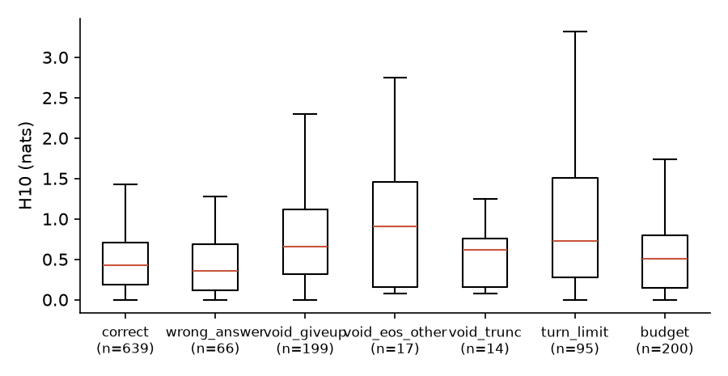

TIR-RL · 四组 smoke test 的全部结果 · Yunxiang (Kevin) Mo · 2026-11-06
工具反馈后的高熵，
是探索还是无效续写？
模型拿到工具结果后确实更“犹豫”（熵更高）。但在这个实验规模下，犹豫本身既不能说明它在做有价值的探索，也不能说明后面会出问题。
项目的第一方向仍是一篇综述，主题是用强化学习训练会调用工具的模型。这里的四个小实验（smoke test）是附带的探索，不改变这个方向。
先看懂这个研究
不需要背景知识。读完这一部分就够了解全部结论，后面的详细结果是给想核对数字的读者。
这个研究在问什么
现在的大模型解数学题时，可以自己写一段代码，运行它，看到结果后再接着想。这种做法叫工具调用推理（Tool-Integrated Reasoning，TIR）。
研究者观察到，代码结果一返回，模型对“下一个词写什么”会突然变得犹豫。ARPO、AEPO、TAO-RL 这类训练方法把这种犹豫当成好信号，认为模型这时在探索新思路，于是在这些地方多试几次，或者给额外奖励。
这种犹豫真的代表有价值的探索吗？还是只是工具结果让模型不确定，并没有什么用？
“犹豫”怎么量：熵
模型写每个词之前，都有一张“下一个词可能是什么”的概率表。这张表越集中，模型越确定；越分散，模型越犹豫。熵就是衡量分散程度的数字：0 表示完全确定，越大越犹豫。单位是 nats，不用管它的具体含义，比大小就够了。
这两张表是虚构的示意，不是实验数据。
本页主要用两个指标：
- H10：工具结果之后，前 10 个词的平均熵。这是本页最常出现的数字。
- H_first：工具结果之后，第一个词的熵。
做了四个实验
A：看相关
在工具返回后的 30 个时刻，每个时刻让模型接着写 6 遍。问：越犹豫的时刻，后面越容易错吗？
B：动手改工具结果（最重要）
同一道题写到同一个地方，只把工具结果换掉：改形式、改数字、换成无关内容、报错、留空。再看犹豫程度和答对率各自怎么变。
C：比较在哪里重试
模型做一道题可以从中途某处重写。比较 5 种选位置的办法，包括“挑最犹豫的地方”和随便挑。
D：查“没答案就结束”的情况
有些解题过程没给答案就结束了，这叫 void turn。查它们到底是什么，和犹豫有没有关系。
看到了什么
- 只改形式：更犹豫，答对率基本没变。把同样的结果包上一堆日志，H10 从 .579 升到 .829，答对率从 62% 到 66%，这个差异没有检出。
- 只改内容：答对率大跌，犹豫程度的变化没有检出。把结果里的数字改错，答对率从 62% 掉到 29%；H10 从 .579 到 .678，这个变化没有检出。
- 所以光看犹豫程度，分不清好坏。这是本研究的主要结论。在这个规模上，高熵本身既不能说明模型在做有价值的探索，也不能说明后面会出问题。
- “没答案就结束”几乎都是同一句话。216 次里有 199 次（92.1%）模型只写了
Reach max function call limit.（已达到工具调用上限）。而且一个换行符影响很大：调用 4 次工具后，这句话开头的词出现的概率，不加换行时约 0.07%，加了约 40%。这句话从哪来的，目前还不知道。 - 挑最犹豫的地方重试，没有显示优势。没有哪种办法显著胜过随便挑。不过只有 10 道题，不能据此说这种办法没用。
这些结论的范围很窄：只测了一个模型的压缩版（4-bit），最多 36 道题，只看模型做题，没有训练模型。“没有检出”只表示在这个规模下看不出来，不等于没有差别。
数字怎么读
- 差值
- 改动后减去不改动。B 里的 −.333 表示答对率下降 33 个百分点。
- 95% CI（置信区间）
- 真实差值大概率落在的范围。范围不含 0，说明方向比较确定。
- p 值
- 如果其实没有差别，碰巧看到这么大差异的可能性。越小越不像碰巧。
- Holm、BH
- 同时比较很多次时，总有几次碰巧显著。这两种方法把 p 值校正得更严格。
- 检出 / 未检出
- “检出”表示校正后 p<.05 且 CI 不含 0，是事先定好的规则。“未检出”不等于没有差别。
- ρ（相关系数）
- 两个数字一起变化的程度，−1 到 1。相关不等于因果。
术语表
| 术语 | 白话解释 |
|---|---|
| 工具调用推理（TIR） | 模型解题时自己写代码、运行、看结果，再接着想。 |
| 工具结果 / 工具反馈 | 代码运行后返回给模型的内容，比如一个数字或一条报错。 |
| 轨迹（rollout） | 模型从头到尾解一道题的完整过程。 |
| 前缀 | 轨迹中已经写好的前面部分。B 让模型从同一个前缀接着写，这样差别只来自工具结果。 |
| 续写 | 从某个位置开始，让模型接着往下写的结果。 |
| 状态 | 轨迹中选定的一个位置，模型从这里续写。 |
| placebo（对照） | 普通文字中随机选的位置，不紧跟工具结果。用来判断现象是不是工具特有的。 |
| 熵（nats） | 模型对下一个词有多犹豫。0 表示完全确定，越大越犹豫。 |
| H_first | 工具结果后第一个词的熵。直接算出，不受后面写了什么影响。 |
| H10 / H50 | 工具结果后前 10 / 50 个词的平均熵。受模型实际写了什么影响，所以不能作因果解读。 |
| 成功率 / 答对率 | 最终答案正确的比例。 |
| 有效率 | 正常给出答案结束的比例，不包括没答案就结束、被截断或用完轮次。 |
| void turn | 模型既没写代码也没给答案的最后一轮。 |
void_eos / void_trunc | void turn 的两种：模型自己结束 / 被长度限制截断。 |
| giveup | void turn 的内容恰好是 Reach max function call limit. 这句话。 |
| budget | 因为笔记本的长度预算被截断。官方的长度上限更长。 |
| 分支 | 从轨迹中途某处重新写一遍。 |
| 解离 | 两种改法让熵差不多，答对率却差很多，说明熵和质量可以分开变动。 |
| 预注册 | 在看到数据之前，先写下要测什么、怎么判定，防止事后挑对自己有利的结果。 |
| Spearman / ρ | 衡量两个数字一起变化的程度，−1 到 1。相关不等于因果。 |
| Holm / BH | 同时比较很多次时校正 p 值的方法，防止把碰巧当成发现。 |
| bootstrap | 反复重抽样本来估计不确定性，得到置信区间。 |
| 4-bit / 8-bit / fp16 | 模型权重的压缩程度。4-bit 最小，能在笔记本上跑，但可能改变熵；fp16 是未压缩的版本。 |
| gn | 一个和梯度有关的灵敏度指标，不是训练时的真实梯度。 |
Column Definitions（列定义）
| Column | Definition | Computation | Unit / Range | Meaning | Source |
|---|---|---|---|---|---|
| 术语 | 本页出现的专业词 | 人工整理 | 文本 | 查询 | build_site.py |
| 白话解释 | 给没有背景的读者的说明 | 人工撰写，严格定义见各表的 Column Definitions | 文本 | 帮助理解 | 同上 |
详细结果
下面是完整报告和全部表格，用来核对细节。每组实验开头有一段白话说明，虚线下划线的术语可以把鼠标移上去看解释。
2026-11-06。所有数字来自
experiments/smoke/results/simpletir7b/，原始轨迹在experiments/smoke/runs/simpletir7b/（不进 git）。预注册：PREREG.md，commitca8d6c8，在任何真实 rollout 之前提交。这是笔记本上的 smoke test：一个模型、4-bit 量化、最多 36 道题。它能发现大效应，也能发现设计错误，但不能确立小效应。“未检出”只表示在这个规模下没有检出。
1. 结论
观察结果
- 熵和续写质量可以分开变动（B，干预实验，15 个前缀）。 只改形式时，H10 上升，但质量没有检出变化：
verboseH10 +0.250（Holm .027），成功率 +0.033（Holm .747）；text_onlyH10 +0.162（Holm .002），成功率 −0.033（Holm .747）。只把数字改错时，成功率下降，H10 的上升未检出：perturbed成功率 −0.333（Holm .030），有效率 −0.256（Holm .031），H10 +0.099（Holm .096）。 - 预注册的解离判据成立。 例如
perturbed对text_only：H10 只差 0.063，成功率差 0.300（95% CI −0.433 到 −0.167）。42 组比较中有 6 组满足判据（未做多重比较校正）。 - 高 H10 的状态平均质量更低，但没有通过预注册校正（A）。 H10 与成功率的组内 Spearman ρ=−0.446（置换 p=.045，BH .262）。所有预注册主要相关都未通过 BH。H10 依赖采样路径，不能作因果解读；不依赖路径的 H_first 与成功率没有这个关系（ρ=+0.166，p=.562）。也没有证据表明这一关系是工具特有的：与 placebo 的交互项 CI 包含 0。
- void turn 几乎是一个固定字符串（D）。 216 个
void_eos中有 199 个（92.1%）的最后一轮就是Reach max function call limit.，其中 193 个出现在已调用 4 次工具之后。在同一状态的续写之间，void 和非 void 的 H10 没有检出差异（差值 −0.047，CI −0.125 到 0.020，n=75 个状态）。 - 这个字符串由协议的最后一轮
\n和非空工具结果共同触发（事后探针，只看第一个 token）。 已调用 4 次时，P(Reach) 在没有后缀时为 0.0007，加后缀后为 0.4042（CI 0.278–0.512），加后缀但工具结果为空时为 0.0037。 - 推理时按熵选分支点没有显示优势（C，10 题）。 没有哪个策略显著胜过
random。tool_boundary的点估计最高（分支正确率 .572，random.300；符号检验赢 5 输 1，p=.219）。high_entropy.260，posttool_high.262。 H_first对量化敏感。 4-bit 对 8-bit，工具返回后首 token 的 Spearman 只有 .643（n=18），平均 abs(ΔH) .221；同一 4-bit 模型的回放对照分别是 .998 和 .009。全部 token 上 Spearman 为 .965，超过预注册的 0.9；但自身对照也只有 .975，这个指标受大量接近 0 的熵值影响，判断时应看 abs(ΔH)。
假设（未验证）
- 高熵至少混合了两种来源：反馈的形式带来的不确定性，以及内容与上下文冲突带来的不确定性。前者在这里不伤质量。
- 按熵给奖励或选分支的方法，可能会奖励和内容无关的格式变化。这里只测了推理时的续写，没有训练。
- 模型在训练中见过这种最后一轮的格式和限制字符串，因此学到了这个反应。这个字符串的来源目前未知：公开的 SimpleTIR 代码和已查的论文里都没有找到。
尚未验证的解释
- 没有计算训练梯度。
gn只是 log p(a) 对 logit 的灵敏度代理量，它在各类轨迹上的最大值都约为 1.27–1.39。这些结果不能支持也不能否定梯度爆炸。 tool_boundary点估计最高的原因未知，它的分支位置和其他策略不同（§3.4），n=10。perturbed降低质量的机制未确定。案例中可以看到模型直接采信错误数字（§4），但adopt的差值未检出（−0.278，Holm .151）。
2. 实验配置
| 项目 | 取值 | 依据 |
|---|---|---|
| 模型 | ZhenghaiXue/Qwen2.5-7B-SimpleTIR，commit fbe635a，4-bit MLX |
公开权重，协议公开；只有 M1 Pro 16GB 可用 |
| 采样 | T=1，无 top-p / top-k，每条序列独立 PRNG | RL rollout 分布；SimpleTIR 验证用 top_p=0.7，成功率不能直接对比 |
| 熵 | 全词表 Shannon 熵（nats），逐 token 记录 | 与 ARPO、APPO、ProCredit 同定义 |
| 协议 | 复现 SimpleTIR agent_utils.py：首个完整代码块后停止；\nCode execution result: {stdout}\n；错误取 stderr 末行；512 字符和 256 token 限制；5 s 超时；max_turns 5；最后一轮追加 \n |
formats.py |
| 长度限制 | 单轮 2048 token；根轨迹 4096；续写 2500 | 官方为 8000（训练）/ 12000（评测），笔记本预算不够，见 PREREG.md §7 |
| 题目 | 种子 4212：20 道 AIME 2024 + 40 道 MATH level 4–5，整数答案；校准实际 36 题 | data/problems_all.json，run_exps.py |
| 沙箱 | sandbox-exec：无网络，不写临时目录外，不读 $HOME，无子进程，内存 2GB |
sandbox.py |
| 规模 | 校准 36×4 = 144；A 15 题 ×（2 工具后 + 1 placebo）×6 = 270；B 15 前缀 ×7 条件 ×6 = 630，另有 135 条首 token 记录；C 10 题 ×5 策略，186 条分支 | runs/simpletir7b/*.jsonl，config_*.json |
| 统计 | A：组内 Spearman，置换检验，题目聚类 bootstrap，BH；B：配对 Wilcoxon，每个结局内 Holm（6 个条件）；C：精确符号检验 | analyze.py |
Column Definitions（列定义）
| Column | Definition | Computation | Unit / Range | Meaning | Source |
|---|---|---|---|---|---|
| 项目 | 配置项名称 | 人工列出 | 文本 | 配置维度 | PREREG.md §1 |
| 取值 | 实际运行使用的值 | 读配置和代码 | 文本 / 数值 | 复现所需的设定 | config_*.json，run_exps.py |
| 依据 | 选择理由或代码位置 | 人工说明，非测量 | 文本 | 说明来源 | PREREG.md，formats.py |
3. 结果
3.1 校准
白话：这一节在做什么
正式实验前，先看模型在这台电脑上的基本水平，并确认工具返回后熵确实上升。
- 模型在较难的 AIME 题上答对 20.8%，在较容易的 MATH 题上答对 86.5%。（采样方式比官方评测更随机，不能和官方成绩直接对比。）
- 看下面的曲线：蓝线是工具结果之后，灰线是第一轮。蓝线一直明显更高，说明工具返回后模型确实更犹豫。
| 来源 | rollouts | 题目 | 成功率 | 有效率 | void_eos | budget | 平均调用 | 平均 token |
|---|---|---|---|---|---|---|---|---|
| AIME 2024 | 48 | 12 | .208 | .271 | .167 | .333 | 3.146 | 3106.6 |
| MATH | 96 | 24 | .865 | .865 | .052 | .052 | 1.698 | 1400.4 |
Column Definitions（列定义）
| Column | Definition | Computation | Unit / Range | Meaning | Source |
|---|---|---|---|---|---|
| rollouts / 题目 | 根轨迹数和题目数 | 计数 | 整数 | 样本量 | calib_summary.csv |
| 成功率 | boxed 答案正确的比例 | grade_rollout 的均值；CI not computed |
0–1 | 最终正确 | 同上 |
| 有效率 | 以 boxed 答案结束，无 void、截断、轮次上限 | 比例；CI not computed | 0–1 | 正常结束 | 同上 |
| void_eos | 最后一轮既无代码块也无 boxed，且以 EOS 结束 | 比例；CI not computed | 0–1 | void turn | 同上 |
| budget | 碰到长度预算被截断 | 比例；CI not computed | 0–1 | 笔记本限制的影响 | 同上 |
| 平均调用 / 平均 token | 每条轨迹的工具调用数和生成 token 数 | 均值；CI not computed | 次 / token | 轨迹长度 | 同上 |
来源：entropy_profile.csv，entropy_profile_first_turn.csv
查看数据表（抽样位置）
| 位置 | 工具结果之后 | n | 第一轮 | n |
|---|---|---|---|---|
| 0 | .470 | 2641 | .018 | 144 |
| 1 | .805 | 2640 | .362 | 144 |
| 2 | 1.017 | 2640 | .302 | 144 |
| 5 | .763 | 2640 | .093 | 144 |
| 10 | .881 | 2438 | .231 | 144 |
| 25 | .928 | 2428 | .152 | 144 |
| 50 | .826 | 2379 | .194 | 144 |
| 75 | .708 | 2301 | .192 | 144 |
| 99 | .596 | 2252 | .142 | 144 |
Column Definitions（列定义）
| Column | Definition | Computation | Unit / Range | Meaning | Source |
|---|---|---|---|---|---|
| 位置 | 轮内第几个生成 token | 从 0 计数，只含从轮首开始的轮 | 整数 | 轮内位置 | analyze.py |
| 工具结果之后 / 第一轮 | 该位置的平均熵 | 所有轮直接平均；CI not computed | nats | 熵随位置的变化 | entropy_profile*.csv |
| n | 该位置的 token 数 | 计数 | 整数 | 样本量 | 同上 |
图 1：轮内各位置的平均熵。灰线是真正的第一轮（校准根轨迹）；蓝线是工具结果之后的轮。已排除从轮中途开始的续写。
补充结果：全部列
校准：全部列
| 来源 | rollouts | 题目 | 成功率 | 有效率 | void_eos | void_trunc | budget | turn_limit | code_err | 用过工具 | 平均调用 | 平均 token |
|---|---|---|---|---|---|---|---|---|---|---|---|---|
aime24 | 48 | 12 | .208 | .271 | .167 | .062 | .333 | .167 | .750 | .938 | 3.146 | 3106.646 |
math | 96 | 24 | .865 | .865 | .052 | .010 | .052 | .021 | .177 | 1.000 | 1.698 | 1400.406 |
Column Definitions（列定义）
| Column | Definition | Computation | Unit / Range | Meaning | Source |
|---|---|---|---|---|---|
| 来源 | 题目来源 | 分组 | 类别 | AIME 2024 或 MATH | calib_summary.csv |
| rollouts / 题目 | 样本量 | 计数 | 整数 | 样本量 | 同上 |
| 用过工具 | 至少调用一次工具的比例 | 比例；CI not computed | 0–1 | 工具使用 | 同上 |
| 平均调用 / 平均 token | 每条轨迹的工具调用数和 token 数 | 均值 | 次 / token | 轨迹长度 | 同上 |
| 成功率 | boxed 答案正确的比例 | grade_rollout 的均值 | 0–1 | 最终正确 | calib_summary.csv |
| 有效率 | 以 boxed 答案结束，无 void、截断、轮次上限 | 比例 | 0–1 | 正常结束 | calib_summary.csv |
| void_eos | void 且以 EOS 结束 | 比例 | 0–1 | 模型主动结束的 void | calib_summary.csv |
| void_trunc | void 且被单轮长度截断 | 比例 | 0–1 | 限制造成的 void | calib_summary.csv |
| budget | 碰到 token 预算被截断 | 比例 | 0–1 | 笔记本限制的影响 | calib_summary.csv |
| turn_limit | 到轮次上限还没有结束 | 比例 | 0–1 | 用尽轮次 | calib_summary.csv |
| code_err | 至少一次工具错误或超时 | 比例 | 0–1 | 工具失败 | calib_summary.csv |
3.2 实验 A：熵与续写质量
白话：实验 A：越犹豫的时刻，后面越容易错吗？
选 30 个工具刚返回的时刻，每个时刻让模型接着写 6 遍，看 H10 高的时刻答对率是否更低。这只是观察，不是实验操作。
- 看到：H10 越高，答对率确实越低（ρ=−.446，未校正 p=.045）。
- 但是：校正多次比较后不再显著（BH .262）。在普通文字位置做对照，也没有证据说明这是工具特有的。H10 还会受模型实际写了什么影响，所以不能说犹豫导致了出错。
- 所以：这只是一条线索，不是结论。
| 状态类型 | 状态数 | H_first | H10 | 成功率 | 有效率 | void | pass@6 |
|---|---|---|---|---|---|---|---|
| 工具后 | 30 | .515 | .728 | .567 | .594 | .211 | .800 |
| placebo | 15 | .323 | .324 | .533 | .556 | .167 | .933 |
Column Definitions（列定义）
| Column | Definition | Computation | Unit / Range | Meaning | Source |
|---|---|---|---|---|---|
| 状态类型 | 工具结果之后，或普通推理文本中随机位置 | 按预注册规则选取 | 类别 | 工具后与对照 | A_state_means.csv |
| 状态数 | 状态个数 | 计数，每状态 6 条续写 | 整数 | 样本量 | 同上 |
| H_first | 状态后第一个 token 的熵 | 精确值，不依赖采样 | nats，≥0 | 不受续写路径影响 | 同上 |
| H10 | 前 10 个生成 token 的平均熵 | 先按续写平均，再按状态平均；依赖路径 | nats，≥0 | 主要熵指标 | 同上 |
| 成功率 / 有效率 / void | 续写中对应的比例 | 状态内比例再平均；CI not computed | 0–1 | 续写质量 | 同上 |
| pass@6 | 6 条续写至少一条正确 | 状态内指示变量的均值 | 0–1 | 多次采样的覆盖 | 同上 |
| H10 三分位 | H10 | H_first | 成功率 | 有效率 | void | 其中 giveup | pass@6 | 策略多样性 | degenerate | lexical | productive |
|---|---|---|---|---|---|---|---|---|---|---|---|
| 低 | .227 | .224 | .667 | .683 | .183 | .133 | .8 | 1.285 | 4 | 5 | 1 |
| 中 | .566 | .305 | .633 | .683 | .133 | .133 | .9 | 2.641 | 5 | 1 | 4 |
| 高 | 1.392 | 1.017 | .400 | .417 | .317 | .300 | .7 | 2.015 | 7 | 0 | 3 |
Column Definitions（列定义）
| Column | Definition | Computation | Unit / Range | Meaning | Source |
|---|---|---|---|---|---|
| H10 三分位 | 工具后状态按 H10 分三组 | 全样本三分位，每组 10 个状态 | 类别 | 描述性分组 | A_by_tercile.csv |
| H10、H_first、成功率、有效率、void、pass@6 | 同上表 | 组内均值；CI not computed | 同上表 | 同上表 | 同上 |
| 其中 giveup | 以 Reach max function call limit. 结束的比例 |
事后特征 | 0–1 | void 的主要来源 | 同上 |
| 策略多样性 | 首个代码块签名的有效数量 | exp(签名分布的 Shannon 熵)；启发式代理，不是对策略的判断 | ≥1 | 续写的方法差异 | 同上 |
| degenerate / lexical / productive | 预注册分类（阈值见 PREREG.md §3） |
按有效率、成功率、多样性的规则分类，启发式 | 状态数 | 把高熵拆开 | A_taxonomy.csv |
| 预测量→结局（工具后，n=30 个状态，15 题） | ρ | 置换 p | 95% CI | BH |
|---|---|---|---|---|
| H10→成功率 | −.446 | .045 | −.702, −.067 | .262 |
| H10→有效率 | −.394 | .087 | −.683, .017 | .262 |
| H10→void | .235 | .255 | −.143, .552 | .346 |
| H10→策略多样性（n=26） | .394 | .240 | −.311, .823 | .346 |
| H10→结果不确定性 | −.286 | .288 | −.668, .177 | .346 |
| H10→答案多样性（n=26，退化） | .426 | 1.000 | .350, .740 | 1.000 |
| H_first→成功率（非主要） | .166 | .562 | −.399, .626 | not computed |
Column Definitions（列定义）
| Column | Definition | Computation | Unit / Range | Meaning | Source |
|---|---|---|---|---|---|
| ρ | 组内 Spearman 相关 | 按题目去均值后计算 | −1 到 1 | 同一题内部的关联，非因果 | A_correlations.csv |
| 置换 p | 题目内置换 10,000 次 | 双侧 | 0–1 | 单项显著性 | 同上 |
| 95% CI | 题目聚类 bootstrap | 百分位法 | −1 到 1 | 不确定性 | 同上 |
| BH | Benjamini–Hochberg 校正后的 p | 预注册主要族共 6 项 | 0–1 | 校正后显著性 | 同上 |
事后斜率（标为事后分析）：控制题目固定效应时，H10 每增加 1 nat，成功率变化 −0.329（CI −0.833, −0.102）；再控制轮次 −0.313（−0.962, −0.060）；排除最后一轮状态 −0.305（−1.181, −0.069）。H_first 对应的斜率 +0.094（−0.107, 0.635）。工具后减 placebo 的交互项 −0.257（−0.432, 0.625），CI 包含 0。来源：A_posthoc_slopes.csv。

图 2：状态级 H10 与有效率、成功率、策略多样性。这些是观察性关系。
补充结果：全部列、全部相关、全部斜率、按轮次和工具结果类型分组
状态均值：全部列
| 状态类型 | 状态数 | H_first | H10 | H50 | 成功率 | 有效率 | void | giveup | 其他 void | budget | code_err | 答案多样性 | 策略多样性 | 结果不确定性 | pass@1 | pass@6 |
|---|---|---|---|---|---|---|---|---|---|---|---|---|---|---|---|---|
placebo | 15 | .323 | .324 | .416 | .533 | .556 | .167 | .156 | .011 | .222 | .422 | 1.135 | 2.338 | .602 | .533 | .933 |
posttool | 30 | .515 | .728 | .760 | .567 | .594 | .211 | .189 | .022 | .044 | .244 | 1.071 | 2.004 | .355 | .567 | .800 |
Column Definitions（列定义）
| Column | Definition | Computation | Unit / Range | Meaning | Source |
|---|---|---|---|---|---|
| 状态类型 | 工具结果之后，或普通文本中随机位置 | 按预注册规则选取 | 类别 | 工具后与对照 | A_state_means.csv |
| 状态数 | 状态个数 | 计数，每状态 6 条续写 | 整数 | 样本量 | 同上 |
| H_first | 工具结果或状态后第一个 token 的熵 | 精确分布，不采样；只对 4-bit 模型成立 | nats | 即时不确定性 | A_state_means.csv |
| H10 | 前 10 个生成 token 的平均熵 | 按续写或轨迹平均；依赖路径 | nats | 短程熵 | A_state_means.csv |
| H50 | 前 50 个生成 token 的平均熵 | 同上 | nats | 较长程的熵 | A_state_means.csv |
| 成功率 | boxed 答案正确的比例 | grade_rollout 的均值 | 0–1 | 最终正确 | A_state_means.csv |
| 有效率 | 以 boxed 答案结束，无 void、截断、轮次上限 | 比例 | 0–1 | 正常结束 | A_state_means.csv |
| void | 以 void turn 结束的比例 | void_eos + void_trunc | 0–1 | void turn | A_state_means.csv |
| giveup | 以 Reach max function call limit. 结束 | 完全匹配，事后特征 | 0–1 | void 的主要来源 | A_state_means.csv |
| 其他 void | 不是这个字符串的 void | 比例 | 0–1 | 真正多样的 void | A_state_means.csv |
| budget | 碰到 token 预算被截断 | 比例 | 0–1 | 笔记本限制的影响 | A_state_means.csv |
| code_err | 至少一次工具错误或超时 | 比例 | 0–1 | 工具失败 | A_state_means.csv |
| 答案多样性 | 有效续写的答案分布的有效数量 | exp(Shannon 熵) | ≥1 | 答案差异 | A_state_means.csv |
| 策略多样性 | 首个代码块签名的有效数量 | exp(Shannon 熵)；启发式代理，不是对策略的判断 | ≥1 | 方法差异 | A_state_means.csv |
| 结果不确定性 | 成功率的二元熵 | H₂(成功率) | 0–1 bit | 结局是否取决于采样 | A_state_means.csv |
| pass@1 | 1 条续写正确的概率 | 超几何分布精确值 | 0–1 | 单次采样 | A_state_means.csv |
| pass@6 | 6 条续写至少一条正确 | 状态内指示变量的均值 | 0–1 | 多次采样的覆盖 | A_state_means.csv |
工具后状态按轮次分组（描述性）
| 轮次 | 状态数 | H_first | H10 | 成功率 | 有效率 | giveup | 其他 void | budget |
|---|---|---|---|---|---|---|---|---|
| 1 | 14 | .238 | .519 | .714 | .726 | .131 | .000 | .083 |
| 2 | 8 | .177 | .510 | .667 | .729 | .146 | .000 | .021 |
| 3 | 5 | 1.010 | 1.218 | .200 | .233 | .400 | .100 | .000 |
| 4 | 3 | 1.883 | 1.470 | .222 | .222 | .222 | .056 | .000 |
Column Definitions（列定义）
| Column | Definition | Computation | Unit / Range | Meaning | Source |
|---|---|---|---|---|---|
| 轮次 | 状态所在的轮 | 分组 | 整数 | 位置 | A_by_turn.csv |
| 状态数 | 这一轮的状态个数 | 计数 | 整数 | 样本量 | 同上 |
| H_first | 工具结果或状态后第一个 token 的熵 | 精确分布，不采样；只对 4-bit 模型成立 | nats | 即时不确定性 | A_by_turn.csv |
| H10 | 前 10 个生成 token 的平均熵 | 按续写或轨迹平均；依赖路径 | nats | 短程熵 | A_by_turn.csv |
| 成功率 | boxed 答案正确的比例 | grade_rollout 的均值 | 0–1 | 最终正确 | A_by_turn.csv |
| 有效率 | 以 boxed 答案结束，无 void、截断、轮次上限 | 比例 | 0–1 | 正常结束 | A_by_turn.csv |
| giveup | 以 Reach max function call limit. 结束 | 完全匹配，事后特征 | 0–1 | void 的主要来源 | A_by_turn.csv |
| 其他 void | 不是这个字符串的 void | 比例 | 0–1 | 真正多样的 void | A_by_turn.csv |
| budget | 碰到 token 预算被截断 | 比例 | 0–1 | 笔记本限制的影响 | A_by_turn.csv |
工具后状态按真实工具结果类型分组（观察性，非干预）
| 工具结果类型 | H_first | H10 | 成功率 | 有效率 | void | giveup | 状态数 |
|---|---|---|---|---|---|---|---|
empty | 1.485 | .363 | .000 | .167 | .500 | .250 | 2 |
error | .029 | .605 | .548 | .548 | .214 | .214 | 7 |
ok | .459 | .712 | .704 | .713 | .185 | .185 | 18 |
timeout | 1.337 | 1.355 | .167 | .278 | .167 | .111 | 3 |
Column Definitions（列定义）
| Column | Definition | Computation | Unit / Range | Meaning | Source |
|---|---|---|---|---|---|
| 工具结果类型 | 状态前一次工具调用的结果 | ok / error / timeout / empty | 类别 | 自然出现的反馈类型，不是随机分配 | A_by_natural_tool_kind.csv |
| H_first … giveup | 组内均值 | CI not computed | nats 或 0–1 | 同上表 | 同上 |
| 状态数 | 这一类的状态个数 | 计数 | 整数 | 样本量 | 同上 |
全部工具后相关（21 行）
| 预测量 | 结局 | 状态数 | 题目 | ρ | 置换 p | CI 下限 | CI 上限 | BH |
|---|---|---|---|---|---|---|---|---|
H10 | success | 30 | 15 | −.446 | .045 | −.702 | −.067 | .262 |
H10 | valid | 30 | 15 | −.394 | .087 | −.683 | .017 | .262 |
H10 | void | 30 | 15 | .235 | .255 | −.143 | .552 | .346 |
H10 | answer_div | 26 | 15 | .426 | 1.000 | .350 | .740 | 1.000 |
H10 | strategy_div | 26 | 15 | .394 | .240 | −.311 | .823 | .346 |
H10 | outcome_unc | 30 | 15 | −.286 | .288 | −.668 | .177 | .346 |
H10 | pass@6 | 30 | 15 | −.373 | .248 | −.674 | .015 | not computed |
H_first | success | 30 | 15 | .166 | .562 | −.399 | .626 | not computed |
H_first | valid | 30 | 15 | .201 | .468 | −.349 | .652 | not computed |
H_first | void | 30 | 15 | −.392 | .182 | −.799 | .178 | not computed |
H_first | answer_div | 26 | 15 | .352 | 1.000 | .245 | .670 | not computed |
H_first | strategy_div | 26 | 15 | .128 | .642 | −.400 | .724 | not computed |
H_first | outcome_unc | 30 | 15 | −.304 | .269 | −.704 | .201 | not computed |
H_first | pass@6 | 30 | 15 | −.149 | .760 | −.640 | .420 | not computed |
H50 | success | 30 | 15 | −.447 | .063 | −.725 | −.054 | not computed |
H50 | valid | 30 | 15 | −.462 | .072 | −.754 | −.015 | not computed |
H50 | void | 30 | 15 | .447 | .024 | .168 | .706 | not computed |
H50 | answer_div | 26 | 15 | .130 | 1.000 | .050 | .364 | not computed |
H50 | strategy_div | 26 | 15 | .487 | .198 | −.235 | .887 | not computed |
H50 | outcome_unc | 30 | 15 | −.061 | .836 | −.541 | .457 | not computed |
H50 | pass@6 | 30 | 15 | −.224 | .495 | −.649 | .337 | not computed |
Column Definitions（列定义）
| Column | Definition | Computation | Unit / Range | Meaning | Source |
|---|---|---|---|---|---|
| 预测量 / 结局 | 相关的两个变量 | 结局含义见其他表 | 类别 | 比较范围 | A_correlations.csv |
| 状态数 / 题目 | 样本量 | 计数 | 整数 | 样本量 | 同上 |
| ρ | 组内 Spearman 相关 | 按题目去均值后计算 | −1 到 1 | 同一题内部的关联，非因果 | 同上 |
| 置换 p | 题目内置换 10,000 次 | 双侧 | 0–1 | 单项显著性 | 同上 |
| CI 下限 / 上限 | 95% CI | 题目聚类 bootstrap，百分位法 | −1 到 1 | 不确定性 | 同上 |
| BH | Benjamini–Hochberg 校正后的 p | 只对预注册主要族计算，其他为 not computed | 0–1 | 校正后显著性 | 同上 |
预注册时每题只有一个 placebo 状态，组内相关无法计算（报告 §8），所以 placebo 行没有列出。
全部事后斜率（事后分析）（42 行）
| 结局 | 预测量 | 模型 | 状态数 | 每 nat 斜率 | CI 下限 | CI 上限 |
|---|---|---|---|---|---|---|
success | H10 | posttool, problem FE | 30 | −.329 | −.833 | −.102 |
success | H10 | posttool, problem FE + turn index | 30 | −.313 | −.962 | −.060 |
success | H10 | posttool, excluding final-turn states | 27 | −.305 | −1.181 | −.069 |
success | H_first | posttool, problem FE | 30 | .094 | −.107 | .635 |
success | H_first | posttool, problem FE + turn index | 30 | .197 | −.079 | .765 |
success | H_first | posttool, excluding final-turn states | 27 | .639 | −.240 | 1.103 |
valid | H10 | posttool, problem FE | 30 | −.378 | −.922 | −.058 |
valid | H10 | posttool, problem FE + turn index | 30 | −.349 | −1.082 | −.053 |
valid | H10 | posttool, excluding final-turn states | 27 | −.263 | −1.136 | −.042 |
valid | H_first | posttool, problem FE | 30 | .089 | −.136 | .678 |
valid | H_first | posttool, problem FE + turn index | 30 | .212 | −.069 | .820 |
valid | H_first | posttool, excluding final-turn states | 27 | .685 | −.029 | 1.108 |
void | H10 | posttool, problem FE | 30 | .137 | −.033 | .553 |
void | H10 | posttool, problem FE + turn index | 30 | .104 | −.077 | .578 |
void | H10 | posttool, excluding final-turn states | 27 | .142 | −.037 | .809 |
void | H_first | posttool, problem FE | 30 | −.061 | −.651 | .109 |
void | H_first | posttool, problem FE + turn index | 30 | −.143 | −.683 | .064 |
void | H_first | posttool, excluding final-turn states | 27 | −.594 | −.996 | −.055 |
void_giveup | H10 | posttool, problem FE | 30 | .167 | .013 | .561 |
void_giveup | H10 | posttool, problem FE + turn index | 30 | .181 | .021 | .638 |
void_giveup | H10 | posttool, excluding final-turn states | 27 | .195 | .021 | .961 |
void_giveup | H_first | posttool, problem FE | 30 | −.079 | −.604 | .116 |
void_giveup | H_first | posttool, problem FE + turn index | 30 | −.118 | −.686 | .159 |
void_giveup | H_first | posttool, excluding final-turn states | 27 | −.524 | −.946 | .108 |
void_other | H10 | posttool, problem FE | 30 | −.029 | −.178 | .035 |
void_other | H10 | posttool, problem FE + turn index | 30 | −.077 | −.252 | .020 |
void_other | H10 | posttool, excluding final-turn states | 27 | −.052 | −.358 | .000 |
void_other | H_first | posttool, problem FE | 30 | .018 | −.097 | .069 |
void_other | H_first | posttool, problem FE + turn index | 30 | −.026 | −.185 | .076 |
void_other | H_first | posttool, excluding final-turn states | 27 | −.070 | −.402 | .000 |
budget | H10 | posttool, problem FE | 30 | −.026 | −.243 | .172 |
budget | H10 | posttool, problem FE + turn index | 30 | .066 | −.066 | .247 |
budget | H10 | posttool, excluding final-turn states | 27 | .051 | −.049 | .397 |
budget | H_first | posttool, problem FE | 30 | −.105 | −.201 | .084 |
budget | H_first | posttool, problem FE + turn index | 30 | −.036 | −.196 | .127 |
budget | H_first | posttool, excluding final-turn states | 27 | .004 | −.146 | .526 |
success | H10 | interaction: slope(post-tool) minus slope(placebo), problem FE | 45 | −.256 | −.432 | .624 |
valid | H10 | interaction: slope(post-tool) minus slope(placebo), problem FE | 45 | −.256 | −.416 | .796 |
void | H10 | interaction: slope(post-tool) minus slope(placebo), problem FE | 45 | −.063 | −1.989 | .058 |
success | H_first | interaction: slope(post-tool) minus slope(placebo), problem FE | 45 | −.078 | −.208 | 1.003 |
valid | H_first | interaction: slope(post-tool) minus slope(placebo), problem FE | 45 | −.055 | −.166 | 1.672 |
void | H_first | interaction: slope(post-tool) minus slope(placebo), problem FE | 45 | −.096 | −1.405 | .019 |
Column Definitions（列定义）
| Column | Definition | Computation | Unit / Range | Meaning | Source |
|---|---|---|---|---|---|
| 结局 / 预测量 / 模型 | 回归的设定 | OLS，题目固定效应，另含轮次控制、排除最后一轮、与 placebo 的交互 | 类别 | 稳健性 | A_posthoc_slopes.csv |
| 状态数 | 样本量 | 计数 | 整数 | 样本量 | 同上 |
| 每 nat 斜率 | 预测量每增加 1 nat，结局的变化 | OLS 系数 | 比例 / nat | 关联大小，非因果 | 同上 |
| CI 下限 / 上限 | 95% CI | 题目聚类 bootstrap | 同斜率 | 不确定性 | 同上 |
3.3 实验 B：工具反馈干预
白话：实验 B：只换工具结果，会发生什么？
这是最重要的实验。同一道题写到同一个地方，只把工具结果换掉，每种情况接着写 6 遍，比较犹豫程度和答对率。15 道题。
- 只改形式（
verbose、text_only）：H10 上升，答对率没有检出变化。 - 把数字改错（
perturbed）：答对率下降 33 个百分点，H10 的变化没有检出。 - 所以：犹豫程度和答对质量可以分开变动，光看犹豫程度分不清好坏。这里改的是工具结果，不是熵本身，所以不能说熵导致了结果。
7 种工具结果（预注册 §4）
| 条件 | 工具结果之后的文本 | 相对 normal 改变了什么 |
|---|---|---|
normal | 真实输出，官方格式 | 参照 |
perturbed | 数字改掉，格式和长度相同，排除正确值 | 只改内容（错误的值） |
irrelevant | 另一道题的输出 | 只改内容（无关） |
error | 官方格式的 ZeroDivisionError: division by zero | 执行失败，没有信息 |
verbose | 同样的输出，包在沙箱日志行里，不超过 512 字符 | 长度和结构，信息相同 |
text_only | \nThis gives: {stdout}\n | 只改形式（不标记为工具结果） |
empty | \nCode execution result: \n | 没有信息 |
Column Definitions（列定义）
| Column | Definition | Computation | Unit / Range | Meaning | Source |
|---|---|---|---|---|---|
| 条件 | 注入的反馈 | 同一前缀替换工具结果 | 类别 | 干预 | PREREG.md §4 |
| 工具结果之后的文本 | 模型看到的内容 | 预先固定，非测量 | 文本 | 具体操作 | 同上 |
| 改变了什么 | 和 normal 的差别 | 设计时的归类，非测量 | 文本 | 形式还是内容 | 同上 |
同一前缀、同一种子列表，只替换工具结果。
| 条件 | H10 | 有效率 | void | 成功率 | 重新调用工具 | adopt | 平均 token | 观察长度 |
|---|---|---|---|---|---|---|---|---|
normal |
.579 | .678 | .111 | .622 | .711 | .400 | 1317.9 | 30.7 |
perturbed |
.678 | .422 | .244 | .289 | .878 | .122 | 1605.8 | 30.7 |
irrelevant |
.753 | .522 | .289 | .444 | .889 | .167 | 1508.8 | 31.1 |
error |
.579 | .567 | .244 | .533 | .967 | .000 | 1448.1 | 13.0 |
verbose |
.829 | .722 | .111 | .656 | .611 | .478 | 1057.1 | 133.7 |
text_only |
.741 | .656 | .167 | .589 | .689 | .378 | 1215.9 | 29.7 |
empty |
.271 | .600 | .144 | .456 | .744 | .000 | 1424.8 | 6.0 |
Column Definitions（列定义）
| Column | Definition | Computation | Unit / Range | Meaning | Source |
|---|---|---|---|---|---|
| 条件 | 注入的反馈（定义见 PREREG.md §4） |
同一前缀替换工具结果 | 类别 | 干预 | run_exps.py |
| H10 | 工具结果后前 10 个 token 的平均熵 | 先按前缀内平均，再按前缀平均；依赖路径 | nats | 熵 | B_condition_means.csv |
| 有效率 / void / 成功率 | 见 §3.2 | 比例的均值，每条件 15 个前缀 ×6 | 0–1 | 质量 | 同上 |
| 重新调用工具 | 之后又调用工具的比例 | 比例 | 0–1 | 模型是否重试 | 同上 |
| adopt | 最终答案包含注入内容中的数字 | 启发式字符串匹配，非直接观测 | 0–1 | 是否采信反馈 | 同上 |
| 平均 token | 生成 token 数 | 均值 | token | 续写长度 | 同上 |
| 观察长度 | 注入观察的 token 数 | 均值 | token | 长度混杂 | 同上 |
normal 的配对差值，95% CI。检出（Holm p<.05 且 CI 不含 0）未检出H10 差值（nats）
成功率差值
怎么看：每行是一种改法。圆点是相对真实工具结果的变化，右边表示变大，左边表示变小；横线是 95% CI。实心表示按事先定好的规则检出变化。
相对 normal 的配对差值，格式为 差值 [95% CI]，Holm p。粗体表示按预注册规则“检出”（Holm p<.05 且 CI 不含 0）：
| 条件 | H_first（精确） | H10 | 有效率 | void | 成功率 |
|---|---|---|---|---|---|
perturbed |
−.040 [−.154, .085], .454 | +.099 [.014, .183], .096 | −.256 [−.378, −.133], .031 | +.133 [.011, .256], .228 | −.333 [−.500, −.178], .030 |
irrelevant |
−.084 [−.299, .158], .303 | +.174 [.063, .293], .031 | −.156 [−.322, −.000], .398 | +.178 [.067, .289], .074 | −.178 [−.356, −.022], .312 |
error |
−.206 [−.343, −.086], .016 | −.000 [−.114, .122], .934 | −.111 [−.245, .011], .459 | +.133 [.022, .244], .226 | −.089 [−.211, .011], .747 |
verbose |
+.704 [.385, 1.043], .016 | +.250 [.093, .452], .027 | +.044 [−.067, .156], .977 | .000 [−.078, .089], 1.000 | +.033 [−.067, .133], .747 |
text_only |
+.333 [.136, .583], .003 | +.162 [.102, .236], .002 | −.022 [−.089, .044], .977 | +.056 [.000, .122], .228 | −.033 [−.100, .022], .747 |
empty |
+.465 [.196, .757], .022 | −.308 [−.483, −.144], .013 | −.078 [−.222, .044], .977 | +.033 [−.078, .144], 1.000 | −.167 [−.344, −.011], .370 |
Column Definitions（列定义）
| Column | Definition | Computation | Unit / Range | Meaning | Source |
|---|---|---|---|---|---|
| 条件 | 与 normal 比较的条件 |
按前缀配对，n=15 | 类别 | 干预 | B_effects.csv |
| H_first（精确） | 第一个 token 的熵之差 | 精确分布，不采样；只对 4-bit 模型成立（§3.6） | nats | 反馈的即时影响 | B_first_token_effects.csv |
| H10 | H10 之差 | 配对差值 | nats | 短程熵的变化 | B_effects.csv |
| 有效率 / void / 成功率 | 比例之差 | 配对差值 | −1 到 1 | 质量变化 | 同上 |
| CI | 对前缀做 bootstrap | 百分位法 | 同差值 | 不确定性 | 同上 |
| Holm p | Wilcoxon 符号秩检验，在同一结局内 Holm 校正 6 个条件 | 不跨结局校正 | 0–1 | 校正后显著性 | 同上 |
只测首 token 的两个条件：error_name −.225（CI −.356, −.104，Holm .0005），timeout −.193（CI −.331, −.069，Holm .031）。来源：B_first_token_effects.csv。
| 解离对 | 结局 | ΔH10 | Δ结局 | 95% CI | p（未校正） |
|---|---|---|---|---|---|
perturbed − text_only |
成功率 | −.063 | −.300 | −.433, −.167 | .005 |
perturbed − text_only |
有效率 | −.063 | −.233 | −.356, −.111 | .006 |
irrelevant − verbose |
成功率 | −.076 | −.211 | −.378, −.067 | .020 |
normal − perturbed |
成功率 | −.099 | +.333 | .178, .489 | .005 |
normal − perturbed |
有效率 | −.099 | +.256 | .133, .378 | .005 |
error − perturbed |
成功率 | −.100 | +.244 | .111, .400 | .017 |
Column Definitions（列定义）
| Column | Definition | Computation | Unit / Range | Meaning | Source |
|---|---|---|---|---|---|
| 解离对 | 满足预注册判据的条件对 | abs(ΔH10)<0.1 且结局差>0.2 且 CI 不含 0 | 类别 | 熵相近但质量不同 | B_dissociation.csv |
| ΔH10 | 两条件 H10 之差 | 配对差值；未干预 H10 本身 | nats | 熵的接近程度 | 同上 |
| Δ结局 | 两条件结局之差 | 配对差值 | −1 到 1 | 质量差 | 同上 |
| 95% CI | 前缀 bootstrap | 百分位法 | −1 到 1 | 不确定性 | 同上 |
| p（未校正） | Wilcoxon | 42 组比较未校正 | 0–1 | 单项强度 | 同上 |
normal − perturbed 和 error − perturbed 的 abs(ΔH10) 恰好压在 0.1 附近，不应作为主要证据；perturbed − text_only 和 irrelevant − verbose 更稳。
事后分组（6 道 AIME、9 道 MATH）：成功率 normal→perturbed 在 AIME 上 .278→.028，MATH 上 .852→.463；verbose 分别为 .444 和 .796。3 个前缀在 normal 下成功率已是 0，无法再降。CI not computed。来源：B_by_source.csv，B_prefix_condition.csv。
跨前缀相关（观察性）：normal 条件下 H10 与成功率 ρ=−.647（p=.009），其他条件 −.402 到 +.087，均未达 p<.05。来源：B_within_condition.csv。

图 3：每点一个前缀。
补充结果：全部指标、全部列、按题目来源分组、条件内相关
各条件均值：全部列
| 条件 | H_first | H10 | H50 | 有效率 | void | void_eos | void_trunc | giveup | 其他 void | budget | turn_limit | 到达调用上限 | 成功率 | 给出答案时的成功率 | code_err | 重新调用 | 后续调用 | adopt | token | 观察长度 | 答案多样性 | 策略多样性 |
|---|---|---|---|---|---|---|---|---|---|---|---|---|---|---|---|---|---|---|---|---|---|---|
empty | .683 | .271 | .414 | .600 | .144 | .133 | .011 | .111 | .033 | .222 | .033 | .267 | .456 | .808 | .289 | .744 | 1.567 | .000 | 1424.844 | 6.000 | 1.488 | 2.343 |
error | .022 | .579 | .832 | .567 | .244 | .222 | .022 | .200 | .044 | .167 | .022 | .267 | .533 | .833 | .311 | .967 | 1.778 | .000 | 1448.078 | 13.000 | 1.044 | 2.771 |
irrelevant | .148 | .753 | .924 | .522 | .289 | .233 | .056 | .222 | .067 | .156 | .033 | .278 | .444 | .846 | .356 | .889 | 1.700 | .167 | 1508.811 | 31.067 | 1.000 | 2.737 |
normal | .228 | .579 | .564 | .678 | .111 | .111 | .000 | .111 | .000 | .167 | .044 | .222 | .622 | .857 | .344 | .711 | 1.400 | .400 | 1317.856 | 30.733 | 1.131 | 2.462 |
perturbed | .184 | .678 | .729 | .422 | .244 | .244 | .000 | .222 | .022 | .244 | .089 | .344 | .289 | .655 | .400 | .878 | 1.911 | .122 | 1605.767 | 30.733 | 1.111 | 2.401 |
text_only | .565 | .741 | .668 | .656 | .167 | .156 | .011 | .144 | .022 | .156 | .022 | .200 | .589 | .910 | .289 | .689 | 1.378 | .378 | 1215.944 | 29.733 | 1.258 | 2.431 |
verbose | .927 | .829 | .640 | .722 | .111 | .100 | .011 | .100 | .011 | .111 | .056 | .211 | .656 | .844 | .211 | .611 | 1.189 | .478 | 1057.100 | 133.667 | 1.126 | 1.996 |
Column Definitions（列定义）
| Column | Definition | Computation | Unit / Range | Meaning | Source |
|---|---|---|---|---|---|
| 条件 | 注入的反馈 | 每条件 15 个前缀 × 6 | 类别 | 干预 | B_condition_means.csv |
| H_first | 工具结果或状态后第一个 token 的熵 | 精确分布，不采样；只对 4-bit 模型成立 | nats | 即时不确定性 | B_condition_means.csv |
| H10 | 前 10 个生成 token 的平均熵 | 按续写或轨迹平均；依赖路径 | nats | 短程熵 | B_condition_means.csv |
| H50 | 前 50 个生成 token 的平均熵 | 同上 | nats | 较长程的熵 | B_condition_means.csv |
| 有效率 | 以 boxed 答案结束，无 void、截断、轮次上限 | 比例 | 0–1 | 正常结束 | B_condition_means.csv |
| void | 以 void turn 结束的比例 | void_eos + void_trunc | 0–1 | void turn | B_condition_means.csv |
| void_eos | void 且以 EOS 结束 | 比例 | 0–1 | 模型主动结束的 void | B_condition_means.csv |
| void_trunc | void 且被单轮长度截断 | 比例 | 0–1 | 限制造成的 void | B_condition_means.csv |
| giveup | 以 Reach max function call limit. 结束 | 完全匹配，事后特征 | 0–1 | void 的主要来源 | B_condition_means.csv |
| 其他 void | 不是这个字符串的 void | 比例 | 0–1 | 真正多样的 void | B_condition_means.csv |
| budget | 碰到 token 预算被截断 | 比例 | 0–1 | 笔记本限制的影响 | B_condition_means.csv |
| turn_limit | 到轮次上限还没有结束 | 比例 | 0–1 | 用尽轮次 | B_condition_means.csv |
| 到达调用上限 | 累计工具调用达到 4 次 | 比例 | 0–1 | 是否用尽工具调用 | B_condition_means.csv |
| 成功率 | boxed 答案正确的比例 | grade_rollout 的均值 | 0–1 | 最终正确 | B_condition_means.csv |
| 给出答案时的成功率 | 在以答案结束的续写中，答案正确的比例 | 条件比例 | 0–1 | 排除没有给答案的情况 | B_condition_means.csv |
| code_err | 至少一次工具错误或超时 | 比例 | 0–1 | 工具失败 | B_condition_means.csv |
| 重新调用 | 之后又调用工具的比例 | 比例 | 0–1 | 模型是否重试 | B_condition_means.csv |
| 后续调用 | 之后的工具调用次数 | 均值 | 次 | 续写的工具使用 | B_condition_means.csv |
| adopt | 最终答案包含注入内容中的数字 | 启发式字符串匹配，非直接观测 | 0–1 | 是否采信反馈 | B_condition_means.csv |
| token | 生成 token 数 | 均值 | token | 续写长度 | B_condition_means.csv |
| 观察长度 | 注入观察的 token 数 | 均值 | token | 长度混杂 | B_condition_means.csv |
| 答案多样性 | 有效续写的答案分布的有效数量 | exp(Shannon 熵) | ≥1 | 答案差异 | B_condition_means.csv |
| 策略多样性 | 首个代码块签名的有效数量 | exp(Shannon 熵)；启发式代理，不是对策略的判断 | ≥1 | 方法差异 | B_condition_means.csv |
全部指标相对 normal 的差值（108 行）
| 指标 | 条件 | 条件均值 | normal 均值 | 前缀数 | 差值 | CI 下限 | CI 上限 | p | Holm p | 检出 |
|---|---|---|---|---|---|---|---|---|---|---|
H_first | perturbed | .184 | .228 | 15 | −.043 | −.160 | .086 | .389 | .389 | False |
H_first | irrelevant | .148 | .228 | 15 | −.080 | −.300 | .188 | .151 | .303 | False |
H_first | error | .022 | .228 | 15 | −.205 | −.344 | −.082 | .003 | .013 | True |
H_first | verbose | .927 | .228 | 15 | .700 | .384 | 1.036 | .003 | .013 | True |
H_first | text_only | .565 | .228 | 15 | .338 | .143 | .571 | .000 | .002 | True |
H_first | empty | .683 | .228 | 15 | .455 | .181 | .743 | .005 | .016 | True |
H10 | perturbed | .678 | .579 | 15 | .099 | .014 | .183 | .048 | .096 | False |
H10 | irrelevant | .753 | .579 | 15 | .174 | .063 | .293 | .010 | .031 | True |
H10 | error | .579 | .579 | 15 | −.000 | −.114 | .122 | .934 | .934 | False |
H10 | verbose | .829 | .579 | 15 | .250 | .093 | .452 | .007 | .027 | True |
H10 | text_only | .741 | .579 | 15 | .162 | .102 | .236 | .000 | .002 | True |
H10 | empty | .271 | .579 | 15 | −.308 | −.483 | −.144 | .003 | .013 | True |
H50 | perturbed | .729 | .564 | 15 | .165 | .030 | .308 | .041 | .124 | False |
H50 | irrelevant | .924 | .564 | 15 | .360 | .187 | .543 | .001 | .008 | True |
H50 | error | .832 | .564 | 15 | .268 | .093 | .454 | .007 | .027 | True |
H50 | verbose | .639 | .564 | 15 | .075 | −.062 | .220 | .083 | .166 | False |
H50 | text_only | .668 | .564 | 15 | .104 | .059 | .144 | .001 | .007 | True |
H50 | empty | .413 | .564 | 15 | −.151 | −.302 | −.022 | .277 | .277 | False |
valid | perturbed | .422 | .678 | 15 | −.256 | −.378 | −.133 | .005 | .031 | True |
valid | irrelevant | .522 | .678 | 15 | −.156 | −.322 | −.000 | .080 | .398 | False |
valid | error | .567 | .678 | 15 | −.111 | −.245 | .011 | .115 | .459 | False |
valid | verbose | .722 | .678 | 15 | .044 | −.067 | .156 | .404 | .977 | False |
valid | text_only | .656 | .678 | 15 | −.022 | −.089 | .044 | .552 | .977 | False |
valid | empty | .600 | .678 | 15 | −.078 | −.222 | .044 | .326 | .977 | False |
void | perturbed | .244 | .111 | 15 | .133 | .011 | .256 | .057 | .228 | False |
void | irrelevant | .289 | .111 | 15 | .178 | .067 | .289 | .012 | .074 | False |
void | error | .244 | .111 | 15 | .133 | .022 | .244 | .045 | .226 | False |
void | verbose | .111 | .111 | 15 | .000 | −.078 | .089 | 1.000 | 1.000 | False |
void | text_only | .167 | .111 | 15 | .056 | .000 | .122 | .071 | .228 | False |
void | empty | .144 | .111 | 15 | .033 | −.078 | .144 | .618 | 1.000 | False |
void_giveup | perturbed | .222 | .111 | 15 | .111 | .000 | .222 | .083 | .417 | False |
void_giveup | irrelevant | .222 | .111 | 15 | .111 | .022 | .200 | .040 | .238 | False |
void_giveup | error | .200 | .111 | 15 | .089 | −.011 | .211 | .121 | .482 | False |
void_giveup | verbose | .100 | .111 | 15 | −.011 | −.089 | .067 | .792 | 1.000 | False |
void_giveup | text_only | .144 | .111 | 15 | .033 | −.022 | .100 | .167 | .501 | False |
void_giveup | empty | .111 | .111 | 15 | .000 | −.100 | .100 | 1.000 | 1.000 | False |
void_other | perturbed | .022 | .000 | 15 | .022 | .000 | .056 | .157 | .786 | False |
void_other | irrelevant | .067 | .000 | 15 | .067 | .011 | .144 | .059 | .353 | False |
void_other | error | .044 | .000 | 15 | .044 | .000 | .111 | .157 | .786 | False |
void_other | verbose | .011 | .000 | 15 | .011 | .000 | .033 | .317 | .786 | False |
void_other | text_only | .022 | .000 | 15 | .022 | .000 | .056 | .157 | .786 | False |
void_other | empty | .033 | .000 | 15 | .033 | .000 | .089 | .180 | .786 | False |
budget | perturbed | .244 | .167 | 15 | .078 | −.022 | .200 | .207 | 1.000 | False |
budget | irrelevant | .156 | .167 | 15 | −.011 | −.111 | .100 | .952 | 1.000 | False |
budget | error | .167 | .167 | 15 | .000 | −.078 | .078 | .723 | 1.000 | False |
budget | verbose | .111 | .167 | 15 | −.056 | −.133 | .011 | .216 | 1.000 | False |
budget | text_only | .156 | .167 | 15 | −.011 | −.089 | .056 | .782 | 1.000 | False |
budget | empty | .222 | .167 | 15 | .056 | −.011 | .144 | .273 | 1.000 | False |
reached_limit | perturbed | .344 | .222 | 15 | .122 | .022 | .233 | .102 | .609 | False |
reached_limit | irrelevant | .278 | .222 | 15 | .056 | −.033 | .167 | .397 | 1.000 | False |
reached_limit | error | .267 | .222 | 15 | .044 | −.067 | .167 | .399 | 1.000 | False |
reached_limit | verbose | .211 | .222 | 15 | −.011 | −.133 | .089 | 1.000 | 1.000 | False |
reached_limit | text_only | .200 | .222 | 15 | −.022 | −.111 | .056 | .666 | 1.000 | False |
reached_limit | empty | .267 | .222 | 15 | .044 | −.033 | .133 | .416 | 1.000 | False |
success | perturbed | .289 | .622 | 15 | −.333 | −.500 | −.178 | .005 | .030 | True |
success | irrelevant | .444 | .622 | 15 | −.178 | −.356 | −.022 | .062 | .312 | False |
success | error | .533 | .622 | 15 | −.089 | −.211 | .011 | .249 | .747 | False |
success | verbose | .656 | .622 | 15 | .033 | −.067 | .133 | .611 | .747 | False |
success | text_only | .589 | .622 | 15 | −.033 | −.100 | .022 | .340 | .747 | False |
success | empty | .456 | .622 | 15 | −.167 | −.344 | −.011 | .092 | .370 | False |
success_given_answer | perturbed | .654 | .857 | 10 | −.280 | −.560 | .000 | .250 | 1.000 | False |
success_given_answer | irrelevant | .846 | .857 | 13 | −.077 | −.231 | .000 | 1.000 | 1.000 | False |
success_given_answer | error | .833 | .857 | 13 | −.013 | −.038 | .000 | 1.000 | 1.000 | False |
success_given_answer | verbose | .844 | .857 | 14 | −.024 | −.071 | .000 | .317 | 1.000 | False |
success_given_answer | text_only | .910 | .857 | 13 | −.013 | −.038 | .000 | 1.000 | 1.000 | False |
success_given_answer | empty | .808 | .857 | 13 | −.115 | −.282 | .000 | .500 | 1.000 | False |
code_err | perturbed | .400 | .344 | 15 | .056 | −.067 | .189 | .678 | 1.000 | False |
code_err | irrelevant | .356 | .344 | 15 | .011 | −.144 | .200 | .944 | 1.000 | False |
code_err | error | .311 | .344 | 15 | −.033 | −.200 | .122 | .442 | 1.000 | False |
code_err | verbose | .211 | .344 | 15 | −.133 | −.267 | −.011 | .062 | .375 | False |
code_err | text_only | .289 | .344 | 15 | −.056 | −.156 | .033 | .175 | .874 | False |
code_err | empty | .289 | .344 | 15 | −.056 | −.211 | .100 | .373 | 1.000 | False |
retry | perturbed | .878 | .711 | 15 | .167 | −.033 | .389 | .136 | .681 | False |
retry | irrelevant | .889 | .711 | 15 | .178 | −.078 | .444 | .237 | .849 | False |
retry | error | .967 | .711 | 15 | .256 | .033 | .489 | .087 | .524 | False |
retry | verbose | .611 | .711 | 15 | −.100 | −.233 | .022 | .212 | .849 | False |
retry | text_only | .689 | .711 | 15 | −.022 | −.111 | .056 | .680 | 1.000 | False |
retry | empty | .744 | .711 | 15 | .033 | −.122 | .211 | .799 | 1.000 | False |
extra_calls | perturbed | 1.911 | 1.400 | 15 | .511 | .211 | .878 | .009 | .052 | False |
extra_calls | irrelevant | 1.700 | 1.400 | 15 | .300 | −.156 | .844 | .291 | 1.000 | False |
extra_calls | error | 1.778 | 1.400 | 15 | .378 | −.000 | .800 | .108 | .538 | False |
extra_calls | verbose | 1.189 | 1.400 | 15 | −.211 | −.600 | .156 | .442 | 1.000 | False |
extra_calls | text_only | 1.378 | 1.400 | 15 | −.022 | −.233 | .189 | .919 | 1.000 | False |
extra_calls | empty | 1.567 | 1.400 | 15 | .167 | −.178 | .611 | .506 | 1.000 | False |
adopt | perturbed | .122 | .400 | 15 | −.278 | −.511 | −.089 | .038 | .151 | False |
adopt | irrelevant | .167 | .400 | 15 | −.233 | −.478 | −.011 | .089 | .266 | False |
adopt | error | .000 | .400 | 15 | −.400 | −.633 | −.178 | .016 | .095 | False |
adopt | verbose | .478 | .400 | 15 | .078 | .000 | .178 | .102 | .266 | False |
adopt | text_only | .378 | .400 | 15 | −.022 | −.078 | .022 | .414 | .414 | False |
adopt | empty | .000 | .400 | 15 | −.400 | −.633 | −.178 | .016 | .095 | False |
gen_tokens | perturbed | 1605.767 | 1317.856 | 15 | 287.911 | 88.606 | 501.120 | .026 | .153 | False |
gen_tokens | irrelevant | 1508.811 | 1317.856 | 15 | 190.956 | −65.147 | 480.345 | .454 | 1.000 | False |
gen_tokens | error | 1448.078 | 1317.856 | 15 | 130.222 | −102.371 | 383.969 | .679 | 1.000 | False |
gen_tokens | verbose | 1057.100 | 1317.856 | 15 | −260.756 | −509.482 | −48.645 | .035 | .177 | False |
gen_tokens | text_only | 1215.944 | 1317.856 | 15 | −101.911 | −241.456 | 33.193 | .229 | .917 | False |
gen_tokens | empty | 1424.844 | 1317.856 | 15 | 106.989 | −91.440 | 363.809 | .804 | 1.000 | False |
answer_div | perturbed | 1.111 | 1.131 | 10 | .122 | .000 | .301 | .500 | 1.000 | False |
answer_div | irrelevant | 1.000 | 1.131 | 13 | .000 | .000 | .000 | 1.000 | 1.000 | False |
answer_div | error | 1.044 | 1.131 | 13 | −.097 | −.422 | .131 | 1.000 | 1.000 | False |
answer_div | verbose | 1.126 | 1.131 | 14 | .004 | −.328 | .278 | 1.000 | 1.000 | False |
answer_div | text_only | 1.258 | 1.131 | 13 | .118 | .000 | .296 | .500 | 1.000 | False |
answer_div | empty | 1.488 | 1.131 | 13 | .348 | .000 | .819 | .250 | 1.000 | False |
strategy_div | perturbed | 2.401 | 2.462 | 10 | −.105 | −1.941 | 1.735 | .945 | 1.000 | False |
strategy_div | irrelevant | 2.737 | 2.462 | 13 | .394 | −.774 | 1.455 | .557 | 1.000 | False |
strategy_div | error | 2.771 | 2.462 | 13 | .274 | −.976 | 1.439 | .747 | 1.000 | False |
strategy_div | verbose | 1.996 | 2.462 | 14 | −.395 | −1.327 | .474 | .507 | 1.000 | False |
strategy_div | text_only | 2.431 | 2.462 | 13 | −.143 | −.931 | .585 | .844 | 1.000 | False |
strategy_div | empty | 2.343 | 2.462 | 13 | −.231 | −1.064 | .467 | .533 | 1.000 | False |
Column Definitions（列定义）
| Column | Definition | Computation | Unit / Range | Meaning | Source |
|---|---|---|---|---|---|
| 指标 / 条件 | 结局和比较条件 | 按前缀配对 | 类别 | 比较范围；指标含义见其他表 | B_effects.csv |
| 条件均值 / normal 均值 | 两侧均值 | 前缀间平均 | 同指标 | 基线和变化 | 同上 |
| 前缀数 | 配对数 | 计数 | 整数 | 样本量 | 同上 |
| 差值 / CI | 配对差值和 95% CI | 前缀 bootstrap，百分位法 | 同指标 | 效应和不确定性 | 同上 |
| p / Holm p | Wilcoxon 符号秩；同一指标内 Holm 校正 6 个条件 | 不跨指标校正 | 0–1 | 显著性 | 同上 |
| 检出 | Holm p<.05 且 CI 不含 0 | 预注册规则 | True / False | 判定 | 同上 |
首 token（H_first，精确值）：8 个条件，含只测首 token 的 error_name 和 timeout
| 条件 | 前缀数 | 条件均值 | normal 均值 | 差值 | CI 下限 | CI 上限 | p | Holm p | JS 散度 | 观察长度 |
|---|---|---|---|---|---|---|---|---|---|---|
empty | 15 | .694 | .229 | .465 | .196 | .757 | .005 | .022 | .675 | 6.000 |
error | 15 | .022 | .229 | −.206 | −.343 | −.086 | .003 | .016 | .203 | 13.000 |
error_name | 15 | .004 | .229 | −.225 | −.356 | −.104 | .000 | .000 | .203 | 16.000 |
irrelevant | 15 | .144 | .229 | −.084 | −.299 | .158 | .151 | .303 | .217 | 31.067 |
perturbed | 15 | .189 | .229 | −.040 | −.154 | .085 | .454 | .454 | .132 | 30.733 |
text_only | 15 | .562 | .229 | .333 | .136 | .583 | .000 | .003 | .054 | 29.733 |
timeout | 15 | .036 | .229 | −.193 | −.331 | −.069 | .010 | .031 | .204 | 8.000 |
verbose | 15 | .933 | .229 | .704 | .385 | 1.043 | .003 | .016 | .174 | 133.667 |
Column Definitions（列定义）
| Column | Definition | Computation | Unit / Range | Meaning | Source |
|---|---|---|---|---|---|
| 条件 | 与 normal 比较的条件 | 按前缀配对 | 类别 | 干预 | B_first_token_effects.csv |
| 条件均值 / normal 均值 / 差值 | H_first 及其差值 | 精确分布，不采样；只对 4-bit 模型成立 | nats | 反馈的即时影响 | 同上 |
| CI / p / Holm p | 95% CI 和显著性 | 前缀 bootstrap；Wilcoxon，Holm 校正 | nats；0–1 | 不确定性 | 同上 |
| JS 散度 | 首 token 分布与 normal 的 Jensen–Shannon 散度 | 精确分布 | ≥0 | 分布变化的大小 | 同上 |
| 观察长度 | 注入观察的 token 数 | 均值 | token | 长度混杂 | 同上 |
按题目来源分组（事后）
| 来源 | 条件 | 前缀数 | H_first | H10 | 有效率 | void | 成功率 |
|---|---|---|---|---|---|---|---|
aime24 | empty | 6 | .670 | .223 | .333 | .278 | .222 |
aime24 | error | 6 | .020 | .670 | .222 | .500 | .167 |
aime24 | irrelevant | 6 | .035 | .825 | .222 | .500 | .194 |
aime24 | normal | 6 | .235 | .827 | .417 | .222 | .278 |
aime24 | perturbed | 6 | .120 | .849 | .056 | .361 | .028 |
aime24 | text_only | 6 | .578 | .943 | .389 | .306 | .250 |
aime24 | verbose | 6 | .812 | .924 | .611 | .111 | .444 |
math | empty | 9 | .691 | .303 | .778 | .056 | .611 |
math | error | 9 | .024 | .518 | .796 | .074 | .778 |
math | irrelevant | 9 | .223 | .705 | .722 | .148 | .611 |
math | normal | 9 | .223 | .414 | .852 | .037 | .852 |
math | perturbed | 9 | .227 | .564 | .667 | .167 | .463 |
math | text_only | 9 | .557 | .607 | .833 | .074 | .815 |
math | verbose | 9 | 1.005 | .765 | .796 | .111 | .796 |
Column Definitions（列定义）
| Column | Definition | Computation | Unit / Range | Meaning | Source |
|---|---|---|---|---|---|
| 来源 | 题目来源 | 分组，事后 | 类别 | AIME 2024 或 MATH | B_by_source.csv |
| 条件 / 前缀数 | 比较条件和样本量 | 计数；CI not computed | 类别 / 整数 | 分组规模 | 同上 |
| H_first | 工具结果或状态后第一个 token 的熵 | 精确分布，不采样；只对 4-bit 模型成立 | nats | 即时不确定性 | B_by_source.csv |
| H10 | 前 10 个生成 token 的平均熵 | 按续写或轨迹平均；依赖路径 | nats | 短程熵 | B_by_source.csv |
| 有效率 | 以 boxed 答案结束，无 void、截断、轮次上限 | 比例 | 0–1 | 正常结束 | B_by_source.csv |
| void | 以 void turn 结束的比例 | void_eos + void_trunc | 0–1 | void turn | B_by_source.csv |
| 成功率 | boxed 答案正确的比例 | grade_rollout 的均值 | 0–1 | 最终正确 | B_by_source.csv |
每个条件内 H10 与质量的跨前缀相关（观察性）
| 条件 | 结局 | 前缀数 | ρ（H10） | p |
|---|---|---|---|---|
empty | valid | 15 | −.050 | .860 |
empty | success | 15 | .087 | .757 |
error | valid | 15 | −.227 | .416 |
error | success | 15 | −.252 | .365 |
irrelevant | valid | 15 | −.115 | .683 |
irrelevant | success | 15 | −.029 | .917 |
normal | valid | 15 | −.614 | .015 |
normal | success | 15 | −.647 | .009 |
perturbed | valid | 15 | −.525 | .044 |
perturbed | success | 15 | −.130 | .644 |
text_only | valid | 15 | −.584 | .022 |
text_only | success | 15 | −.402 | .138 |
verbose | valid | 15 | −.380 | .162 |
verbose | success | 15 | −.377 | .166 |
Column Definitions（列定义）
| Column | Definition | Computation | Unit / Range | Meaning | Source |
|---|---|---|---|---|---|
| 条件 / 结局 / 前缀数 | 相关的范围 | 在同一条件内跨前缀 | 类别 / 整数 | 比较范围 | B_within_condition.csv |
| ρ（H10） | Spearman 相关 | 未校正 | −1 到 1 | 观察性关联，非因果 | 同上 |
| p | 未校正 p | — | 0–1 | 单项强度 | 同上 |
全部 42 组解离比较：B_dissociation.csv。每个前缀 × 条件的结果：B_prefix_condition.csv。
3.4 实验 C：等预算分支策略（推理时，无训练）
白话：实验 C：挑最犹豫的地方重试，更好吗？
模型做题时可以从中途重写。比较 5 种选位置的办法，每种用同样多的预算。10 道题。
- 看到：工具刚返回的位置（
tool_boundary）分支答对率最高（57%），随便挑（random）是 30%，挑最犹豫的地方（high_entropy）是 26%。 - 但是：差异都没有达到显著，题目也只有 10 道。
- 所以：这组只能说按熵选位置没有显示优势，不能说它没用。
| 策略 | 分支至少一条正确 | 分支正确率 | 分支有效率 | 分支 void | 分支数 | token | 工具调用 | 首 token 不同的比例 | 对 random（赢/输，p） |
|---|---|---|---|---|---|---|---|---|---|
tool_boundary |
.9 | .572 | .572 | .122 | 4.4 | 2999.2 | 3.0 | .289 | 5/1，.219 |
posttool_high |
.7 | .262 | .279 | .303 | 4.5 | 2964.4 | 4.4 | .867 | 2/0，.500 |
high_entropy |
.6 | .260 | .310 | .270 | 4.4 | 2957.0 | 4.1 | .936 | 4/3，1.000 |
low_entropy |
.6 | .283 | .283 | .183 | 2.5 | 2990.2 | 5.0 | .000 | 3/2，1.000 |
random |
.5 | .300 | .300 | .342 | 2.8 | 2981.1 | 4.8 | .108 | 对照 |
5 个策略的 pass@budget（含根轨迹）都是 .9；两个根都错的题只有 2 道，救援率都是 .5。CI not computed。
Column Definitions（列定义）
| Column | Definition | Computation | Unit / Range | Meaning | Source |
|---|---|---|---|---|---|
| 策略 | 重采样位置的规则（见 PREREG.md §5） |
共用同样的两个根轨迹 | 类别 | 分支准则 | C_arm_summary.csv |
| 分支至少一条正确 | 不含根轨迹，至少一条分支正确的题目比例 | 题目级均值，n=10 | 0–1 | 分支的产出 | 同上 |
| 分支正确率 / 有效率 / void | 分支的对应比例 | 先题内后题间平均 | 0–1 | 分支质量 | 同上 |
| 分支数 / token / 工具调用 | 每题消耗 | 均值 | 条 / token / 次 | 预算使用；工具调用并不相等 | 同上 |
| 首 token 不同的比例 | 重采样第一个 token 与原路径不同的比例 | 比例 | 0–1 | 是否真的产生新路径 | 同上 |
对 random |
每题比较分支是否至少一条正确 | 精确符号检验 | 赢/输，p | 是否胜过随机 | C_vs_random.csv |
分支位置（事后）：tool_boundary 平均第 1.909 轮、轮内位置 0，分支正确 .636；posttool_high 第 2.333 轮、中位位置 30，.333；high_entropy 第 2.295 轮、中位位置 124.5，.295；random 第 1.250 轮、中位 301，.357；low_entropy 第 0.800 轮、中位 325，.280。这里的分支正确率按所有分支直接平均，所以和上表（先题内后题间）不同。来源：C_branch_position.csv。
图 4：等预算下的分支平均正确率。
补充结果：策略定义、全部列、分支位置
5 个分支策略的定义（预注册 §5）
| 策略 | 重采样的位置 |
|---|---|
random | 随机 token |
tool_boundary | 工具结果后第一个 token |
high_entropy | 全部策略 token 中熵最高的 |
low_entropy | 全部策略 token 中熵最低的 |
posttool_high | 工具结果后 50 个 token 内熵最高的，最接近 ARPO |
Column Definitions（列定义）
| Column | Definition | Computation | Unit / Range | Meaning | Source |
|---|---|---|---|---|---|
| 策略 | 分支准则 | 预先固定；相邻位置至少隔 8 个 token | 类别 | 比较对象 | PREREG.md §5 |
| 重采样的位置 | 规则的内容 | 预先固定，非测量 | 文本 | 具体操作 | 同上 |
分支策略：全部列
| 策略 | 题目 | pass@budget | 分支至少一条正确 | 分支正确率 | 分支有效率 | 分支 void | 分支数 | token | 工具调用 | 不同有效答案 | 每千 token 正确分支 | 分支点平均熵 | 首 token 不同 | 救援题数 | 救援率 |
|---|---|---|---|---|---|---|---|---|---|---|---|---|---|---|---|
high_entropy | 10 | .900 | .600 | .260 | .310 | .270 | 4.400 | 2957.000 | 4.100 | .600 | .444 | 3.706 | .936 | 2 | .500 |
low_entropy | 10 | .900 | .600 | .283 | .283 | .183 | 2.500 | 2990.200 | 5.000 | .600 | .235 | .000 | .000 | 2 | .500 |
posttool_high | 10 | .900 | .700 | .262 | .279 | .303 | 4.500 | 2964.400 | 4.400 | .800 | .504 | 3.036 | .867 | 2 | .500 |
random | 10 | .900 | .500 | .300 | .300 | .342 | 2.800 | 2981.100 | 4.800 | .500 | .336 | .136 | .108 | 2 | .500 |
tool_boundary | 10 | .900 | .900 | .572 | .572 | .122 | 4.400 | 2999.200 | 3.000 | .900 | .934 | .439 | .289 | 2 | .500 |
Column Definitions（列定义）
| Column | Definition | Computation | Unit / Range | Meaning | Source |
|---|---|---|---|---|---|
| 策略 / 题目 | 分支准则和样本量 | 共用两条根轨迹，n=10 | 类别 / 整数 | 比较对象 | C_arm_summary.csv |
| pass@budget | 任一叶子正确（含根轨迹） | 题目级均值 | 0–1 | 预注册主要结局 | 同上 |
| 分支至少一条正确 / 分支正确率 / 有效率 / void | 只看分支 | 先题内后题间平均；CI not computed | 0–1 | 分支质量 | 同上 |
| 分支数 / token / 工具调用 | 每题消耗 | 均值 | 条 / token / 次 | 预算使用；工具调用并不相等 | 同上 |
| 不同有效答案 / 每千 token 正确分支 | 预注册次要结局 | 题目级均值 | 个 / 条 | 产出效率 | 同上 |
| 分支点平均熵 | 所选位置的平均熵 | 均值 | nats | 策略是否选到高熵位置 | 同上 |
| 首 token 不同 | 重采样第一个 token 与原路径不同的比例 | 比例 | 0–1 | 是否真的产生新路径 | 同上 |
| 救援题数 / 救援率 | 两个根都错的题目，及其中分支答对的比例 | 计数；比例 | 题 / 0–1 | 分支能否救回 | 同上 |
分支位置：全部列（事后）
| 策略 | 分支数 | 平均轮次 | 轮内位置中位数 | 在第一轮的比例 | 分支正确率 |
|---|---|---|---|---|---|
high_entropy | 44 | 2.295 | 124.500 | .023 | .295 |
low_entropy | 25 | .800 | 325.000 | .560 | .280 |
posttool_high | 45 | 2.333 | 30.000 | .000 | .333 |
random | 28 | 1.250 | 301.000 | .393 | .357 |
tool_boundary | 44 | 1.909 | .000 | .000 | .636 |
Column Definitions（列定义）
| Column | Definition | Computation | Unit / Range | Meaning | Source |
|---|---|---|---|---|---|
| 策略 / 分支数 | 分支准则和样本量 | 所有题目合并 | 类别 / 条 | 比较对象 | C_branch_position.csv |
| 平均轮次 / 轮内位置中位数 / 在第一轮的比例 | 分支点的位置 | 事后计算 | 轮 / token / 0–1 | 各策略在不同地方分支 | 同上 |
| 分支正确率 | 所有分支直接平均 | 因此和先题内后题间的数值不同 | 0–1 | 分支质量 | 同上 |
每道题 × 策略的结果：C_problem_arm.csv。
3.5 实验 D：void 审计与事后探针
白话：实验 D：“没答案就结束”到底是什么？
检查全部解题过程，找出模型没给答案就结束的情况，看它们是什么、和犹豫有没有关系。之后加了一个探针：只改工具结果后的文字，直接算下一个词的概率。
- 看到：216 次里有 199 次是同一句话
Reach max function call limit.，大多出现在已调用 4 次工具之后。 - 看到：协议在最后一轮多加一个换行符。加了它，这句话开头的词概率从约 0.07% 变成约 40%；如果工具结果是空的，又降回约 0.37%。
- 所以：用“没答案就结束”的比例代表模型不稳定，要很小心。这只是第一个词的概率，这句话的来源也还不知道。
| 阶段 | answer | budget | turn_limit | void_eos | void_trunc | 合计 |
|---|---|---|---|---|---|---|
| calib | 96 | 21 | 10 | 13 | 4 | 144 |
| A | 157 | 28 | 32 | 53 | 0 | 270 |
| B | 375 | 110 | 27 | 108 | 10 | 630 |
| C | 77 | 41 | 26 | 42 | 0 | 186 |
Column Definitions（列定义）
| Column | Definition | Computation | Unit / Range | Meaning | Source |
|---|---|---|---|---|---|
| 阶段 | 实验阶段 | 分组 | 类别 | 数据来源 | D_terminations.csv |
| answer | 以 boxed 答案结束 | 计数 | 条 | 正常结束 | 同上 |
| budget | 碰到 token 预算 | 计数 | 条 | 笔记本限制 | 同上 |
| turn_limit | 到轮次上限还没有结束 | 计数 | 条 | 用尽轮次 | 同上 |
| void_eos | void 且以 EOS 结束 | 计数 | 条 | void turn | 同上 |
| void_trunc | void 且被单轮长度截断 | 计数 | 条 | 限制造成的 void | 同上 |
| 合计 | 该阶段 rollout 数 | 求和 | 条 | 样本量 | 同上 |
| 已调用次数 | 轮数 | code |
answer |
answer_with_code |
budget_cut | giveup 字符串 | 其他 void |
|---|---|---|---|---|---|---|---|
| 0 | 192 | 189 | 0 | 0 | 0 | 0 | 3 |
| 1 | 1006 | 734 | 73 | 183 | 6 | 0 | 10 |
| 2 | 825 | 512 | 110 | 134 | 59 | 3 | 7 |
| 3 | 590 | 335 | 89 | 50 | 104 | 3 | 9 |
| 4 | 378 | 90 | 47 | 19 | 27 | 193 | 2 |
调用 4 次时，这个字符串占 193/378 = .511。
Column Definitions（列定义）
| Column | Definition | Computation | Unit / Range | Meaning | Source |
|---|---|---|---|---|---|
| 已调用次数 | 这一轮开始前的工具调用数 | 根据阶段和轮次计算 | 0–4 | 轮次位置 | D_turn_classes_by_calls.csv |
| 轮数 | 这一类的轮次数 | 计数 | 轮 | 样本量 | 同上 |
code / answer / answer_with_code |
这一轮的结束方式 | 规则分类 | 轮 | 正常轮 | 同上 |
| budget_cut | 最后一轮且被预算截断 | 规则分类 | 轮 | 不算 void | 同上 |
| giveup 字符串 | 文本恰好是 Reach max function call limit. |
字符串完全匹配，事后定义 | 轮 | 固定反应 | 同上 |
| 其他 void | 其他 void 轮 | 规则分类 | 轮 | 真正多样的 void | 同上 |
| 同状态内 void − 非 void（n=75 个状态） | 均值 | 95% CI | p |
|---|---|---|---|
| ΔH_first（合理性检查，应接近 0） | .001 | −.004, .006 | .430 |
| ΔH10 | −.047 | −.125, .020 | .815 |
| ΔH50 | −.052 | −.126, .012 | .303 |
| Δsurprisal（前 10） | −.084 | −.188, .014 | .245 |
| Δgn（前 10） | −.014 | −.049, .017 | .686 |
Column Definitions（列定义）
| Column | Definition | Computation | Unit / Range | Meaning | Source |
|---|---|---|---|---|---|
| 指标 | 同一状态下 void 与非 void 续写的差 | 先在状态内平均再取差 | nats 或无量纲 | 去除状态效应 | D_same_state_tests.csv |
| 均值 | 差的均值 | 状态间平均 | 同指标 | 差异大小 | 同上 |
| 95% CI | bootstrap | 百分位法 | 同指标 | 不确定性 | 同上 |
| p | 配对检验，未校正 | Wilcoxon | 0–1 | 单项强度 | 同上 |
gn = sqrt(1 − 2p_a + Σp²)，只是 log p(a) 对 logit 的灵敏度代理量，不是训练梯度。
| 轮次 | 轮数 | 题目 | H_first | H10 | H50 |
|---|---|---|---|---|---|
| 第一轮 | 144 | 36 | .018 [.012, .025] | .176 [.154, .198] | .177 [.146, .207] |
| 工具后，调用 1–3 次 | 2283 | 36 | .329 [.250, .409] | .685 [.559, .818] | .685 [.541, .830] |
| 工具后，调用 4 次 | 358 | 16 | .789 [.575, .991] | .624 [.402, .918] | .600 [.360, .925] |
Column Definitions（列定义）
| Column | Definition | Computation | Unit / Range | Meaning | Source |
|---|---|---|---|---|---|
| 轮次 | 按已调用次数分组 | 只含真正从轮首开始的轮 | 类别 | 复现 ARPO 的观察 | D_arpo_entropy_rise.csv |
| 轮数 / 题目 | 样本量 | 计数 | 整数 | 样本量 | 同上 |
| H_first / H10 / H50 | 熵的均值 [95% CI] | 先题内后题间平均，题目 bootstrap | nats | 工具后熵的上升 | 同上 |
**事后探针：**工具结果后第一个 token 为 Reach 的概率（精确），每格 25 个状态。
| 已调用 | 题目 | 不加后缀 | 加 \n |
加 \n + 结果置空 |
加 \n 的中位数 |
加 \n 时 P>.5 的比例 |
加 \n − 不加（95% CI） |
|---|---|---|---|---|---|---|---|
| 1 | 19 | .0000 | .0009 [.0003, .0015] | .0001 | .0001 | .00 | .0008 [.0003, .0014] |
| 2 | 15 | .0001 | .1687 [.0637, .3036] | .0003 | .0605 | .16 | .1685 [.0663, .3051] |
| 3 | 15 | .0002 | .3545 [.2072, .5305] | .0008 | .2312 | .28 | .3543 [.2095, .5244] |
| 4 | 9 | .0007 | .4042 [.2784, .5117] | .0037 | .1156 | .40 | .4035 [.2833, .5071] |
Column Definitions（列定义）
| Column | Definition | Computation | Unit / Range | Meaning | Source |
|---|---|---|---|---|---|
| 已调用 | 上下文中的工具调用数 | 从校准和 A 的真实轨迹中选状态，每题最多 4 个 | 1–4 | 调用历史 | probe_giveup.csv |
| 题目 | 这一格的题目数 | 计数 | 整数 | 聚类数 | 同上 |
不加后缀 / 加 \n / 加 \n + 结果置空 |
三种观察下的平均 P(Reach) |
精确概率，不采样；CI 为题目聚类 bootstrap（CI 未列出的列见 CSV） | 0–1 | 触发条件 | probe_giveup_ci.csv |
| 中位数 / P>.5 的比例 | 加 \n 时的分布 |
状态级统计 | 0–1 | 分布两极化 | 同上 |
加 \n − 不加 |
同状态配对差值 | 题目聚类 bootstrap | −1 到 1 | 单 token 干预的效应 | 同上 |
注意：真实协议只在最后一轮加 \n，所以调用 1–3 次时加后缀是反事实。第 1、2 格和第 3、4 格的计算路径不同（9 行比对：abs(ΔP) 最大 .021，abs(ΔH) 最大 .102，probe_path_check.csv）。
补充结果：轨迹类别的熵、void 按熵分组、每轮的熵、探针全部 12 格
按轨迹类别比较熵、surprisal 和 gn（观察性）
| 轨迹类别 | 条数 | H_first | H10 | H_all | surprisal10 | surprisal_all | gn10 | gn_max | token | 工具调用 |
|---|---|---|---|---|---|---|---|---|---|---|
budget | 200 | .537 | .622 | .550 | .620 | .548 | .328 | 1.385 | 2295.180 | 1.765 |
correct | 639 | .413 | .528 | .296 | .535 | .296 | .297 | 1.342 | 832.668 | 1.061 |
turn_limit | 95 | 1.021 | 1.007 | .710 | .995 | .706 | .435 | 1.376 | 1671.000 | 2.926 |
void_eos_other | 17 | 1.415 | 1.255 | 1.356 | 1.114 | 1.359 | .433 | 1.270 | 1300.000 | .941 |
void_giveup | 199 | .710 | .823 | .625 | .776 | .623 | .392 | 1.367 | 1554.513 | 2.533 |
void_trunc | 14 | .203 | .537 | .223 | .517 | .222 | .321 | 1.391 | 2220.214 | .214 |
wrong_answer | 66 | .670 | .454 | .349 | .459 | .349 | .276 | 1.339 | 1007.909 | .758 |
Column Definitions（列定义）
| Column | Definition | Computation | Unit / Range | Meaning | Source |
|---|---|---|---|---|---|
| 轨迹类别 | 轨迹的结束方式 | 规则分类；void_giveup 是事后拆分 | 类别 | 比较对象 | D_class_entropy.csv |
| 条数 | 这一类的轨迹数 | 计数 | 整数 | 样本量 | 同上 |
| H_first | 工具结果或状态后第一个 token 的熵 | 精确分布，不采样；只对 4-bit 模型成立 | nats | 即时不确定性 | D_class_entropy.csv |
| H10 | 前 10 个生成 token 的平均熵 | 按续写或轨迹平均；依赖路径 | nats | 短程熵 | D_class_entropy.csv |
| H_all | 整条轨迹全部生成 token 的平均熵 | 逐 token 平均 | nats | 全程熵 | D_class_entropy.csv |
| surprisal10 | 第一轮前 10 个 token 的平均 −log p(a) | 采样 token 的负对数概率 | nats | 实际采样的意外程度 | D_class_entropy.csv |
| surprisal_all | 全部 token 的平均 −log p(a) | 同上 | nats | 同上，全程 | D_class_entropy.csv |
| gn10 | 第一轮前 10 个 token 的 gn 均值 | gn = sqrt(1 − 2p_a + Σp²)；灵敏度代理量，不是训练梯度 | 无量纲 | log p(a) 对 logit 的灵敏度 | D_class_entropy.csv |
| gn_max | 全部 token 中 gn 的最大值 | 同上；不是训练梯度 | 无量纲 | 同上，最大值 | D_class_entropy.csv |
| token | 生成 token 数 | 均值 | token | 续写长度 | D_class_entropy.csv |
| 工具调用 | 工具调用次数 | 均值 | 次 | 工具使用 | D_class_entropy.csv |
全部 1230 条轨迹合并，类别之间的差异可能来自题目和阶段的不同，不是因果。

各轨迹类别的 H10。这些是观察性关系。
void 比例按 H_first 三分位（描述性）
| H_first 三分位 | 状态数 | H_first | void | void_eos | void_trunc | 有效率 |
|---|---|---|---|---|---|---|
low | 50 | .006 | .140 | .120 | .020 | .667 |
mid | 50 | .115 | .233 | .227 | .007 | .513 |
high | 50 | 1.112 | .197 | .190 | .007 | .593 |
Column Definitions（列定义）
| Column | Definition | Computation | Unit / Range | Meaning | Source |
|---|---|---|---|---|---|
| H_first 三分位 | 状态按 H_first 分三组 | 全样本三分位 | 类别 | 预注册的 void hazard 分组 | D_void_by_Hfirst_tercile.csv |
| 状态数 | 这一组的状态个数 | 计数；CI not computed | 整数 | 样本量 | 同上 |
| H_first | 工具结果或状态后第一个 token 的熵 | 精确分布，不采样；只对 4-bit 模型成立 | nats | 即时不确定性 | D_void_by_Hfirst_tercile.csv |
| void | 以 void turn 结束的比例 | void_eos + void_trunc | 0–1 | void turn | D_void_by_Hfirst_tercile.csv |
| void_eos | void 且以 EOS 结束 | 比例 | 0–1 | 模型主动结束的 void | D_void_by_Hfirst_tercile.csv |
| void_trunc | void 且被单轮长度截断 | 比例 | 0–1 | 限制造成的 void | D_void_by_Hfirst_tercile.csv |
| 有效率 | 以 boxed 答案结束，无 void、截断、轮次上限 | 比例 | 0–1 | 正常结束 | D_void_by_Hfirst_tercile.csv |
同状态内 void − 非 void：全部 6 项
| 差值 | 状态数 | 均值 | CI 下限 | CI 上限 | p |
|---|---|---|---|---|---|
dH_first | 75 | .001 | −.004 | .006 | .430 |
dH10 | 75 | −.047 | −.125 | .020 | .815 |
dH50 | 75 | −.052 | −.126 | .012 | .303 |
dSurprisal10 | 75 | −.084 | −.188 | .014 | .245 |
dGn10 | 75 | −.014 | −.049 | .017 | .686 |
dGnMax | 75 | −.010 | −.034 | .009 | .928 |
Column Definitions（列定义）
| Column | Definition | Computation | Unit / Range | Meaning | Source |
|---|---|---|---|---|---|
| 差值 | 同一状态内 void 与非 void 续写之差 | 先在状态内平均再取差 | nats 或无量纲 | 去除状态效应 | D_same_state_tests.csv |
| 状态数 | 同时有 void 和非 void 续写的状态数 | 计数 | 整数 | 样本量 | 同上 |
| 均值 / CI / p | 差的均值、95% CI、配对检验 | bootstrap，百分位法；Wilcoxon，未校正 | 同差值；0–1 | 差异大小和强度 | 同上 |
每个状态的差值：D_same_state_pairs.csv。
调用 1–3 次时的“其他 void”
| 轮数 | 其中其他 void | 其他 void 的 H_first | 其他轮的 H_first | 其他 void 的 H10 | 其他轮的 H10 |
|---|---|---|---|---|---|
| 2123 | 25 | .744 | .397 | .902 | .811 |
Column Definitions（列定义）
| Column | Definition | Computation | Unit / Range | Meaning | Source |
|---|---|---|---|---|---|
| 轮数 | 调用 1–3 次、从轮首开始的轮，排除固定字符串和预算截断 | 计数 | 整数 | 样本量 | D_turn_audit.json |
| 其中其他 void | 不是固定字符串的 void 轮 | 计数 | 整数 | 事件太少，只能描述 | 同上 |
| H_first / H10 | 两类轮的平均熵 | 均值；CI not computed | nats | 描述性比较 | 同上 |
每轮的熵，按已调用次数和轮类别（25 行）
| 已调用 | 轮类别 | H_first | H10 | H50 | 平均轮长 |
|---|---|---|---|---|---|
| 0 | code | .018 | .176 | .172 | 803.865 |
| 0 | void_other | .010 | .164 | .419 | 2048.000 |
| 1 | answer | .419 | .366 | .291 | 123.761 |
| 1 | answer_with_code | .363 | .372 | .249 | 371.727 |
| 1 | budget_cut | .186 | 1.091 | 1.145 | 112.667 |
| 1 | code | .305 | .685 | .795 | 665.379 |
| 1 | void_other | .198 | .650 | .605 | 1932.900 |
| 2 | answer | .320 | .634 | .424 | 158.495 |
| 2 | answer_with_code | .296 | .672 | .437 | 448.508 |
| 2 | budget_cut | .597 | .902 | .919 | 937.855 |
| 2 | code | .407 | .998 | 1.078 | 638.547 |
| 2 | giveup_string | .830 | .121 | .121 | 7.000 |
| 2 | void_other | .826 | 1.045 | .940 | 1299.857 |
| 3 | answer | .782 | 1.055 | .659 | 216.427 |
| 3 | answer_with_code | .323 | .728 | .437 | 402.380 |
| 3 | budget_cut | .654 | 1.189 | 1.329 | 601.500 |
| 3 | code | .576 | 1.217 | 1.392 | 635.530 |
| 3 | giveup_string | .847 | .124 | .124 | 7.000 |
| 3 | void_other | 1.356 | 1.092 | 1.431 | 229.125 |
| 4 | answer | 1.348 | 1.106 | .687 | 151.238 |
| 4 | answer_with_code | 1.606 | 1.075 | .700 | 384.947 |
| 4 | budget_cut | .828 | 1.453 | 1.488 | 385.074 |
| 4 | code | 1.083 | 1.482 | 1.589 | 579.053 |
| 4 | giveup_string | .489 | .072 | .072 | 7.000 |
| 4 | void_other | 2.442 | 2.017 | 1.930 | 273.000 |
Column Definitions（列定义）
| Column | Definition | Computation | Unit / Range | Meaning | Source |
|---|---|---|---|---|---|
| 已调用 / 轮类别 | 这一轮开始前的调用数和结束方式 | 规则分类；只含从轮首开始的轮 | 0–4 / 类别 | 分组 | D_turn_entropy_by_class.csv |
| 平均轮长 | 这一类轮的平均 token 数 | 均值 | token | 轮的长度 | 同上 |
| H_first | 工具结果或状态后第一个 token 的熵 | 精确分布，不采样；只对 4-bit 模型成立 | nats | 即时不确定性 | D_turn_entropy_by_class.csv |
| H10 | 前 10 个生成 token 的平均熵 | 按续写或轨迹平均；依赖路径 | nats | 短程熵 | D_turn_entropy_by_class.csv |
| H50 | 前 50 个生成 token 的平均熵 | 同上 | nats | 较长程的熵 | D_turn_entropy_by_class.csv |
探针：全部 12 格（含 H_first）
| 已调用 | 观察 | 状态数 | 题目 | 平均 P(Reach) | 中位数 | P>.5 的比例 | 平均 H_first |
|---|---|---|---|---|---|---|---|
| 1 | no_suffix | 25 | 19 | .0000 | .0000 | .0000 | .0999 |
| 1 | suffix | 25 | 19 | .0009 | .0001 | .0000 | .3437 |
| 1 | suffix_blank_result | 25 | 19 | .0001 | .0000 | .0000 | .8350 |
| 2 | no_suffix | 25 | 15 | .0001 | .0000 | .0000 | .4470 |
| 2 | suffix | 25 | 15 | .1687 | .0605 | .1600 | .9317 |
| 2 | suffix_blank_result | 25 | 15 | .0003 | .0001 | .0000 | 1.4329 |
| 3 | no_suffix | 25 | 15 | .0002 | .0001 | .0000 | .5710 |
| 3 | suffix | 25 | 15 | .3545 | .2312 | .2800 | .7760 |
| 3 | suffix_blank_result | 25 | 15 | .0008 | .0003 | .0000 | 1.7412 |
| 4 | no_suffix | 25 | 9 | .0007 | .0001 | .0000 | .6420 |
| 4 | suffix | 25 | 9 | .4042 | .1156 | .4000 | .9780 |
| 4 | suffix_blank_result | 25 | 9 | .0037 | .0008 | .0000 | 1.9128 |
Column Definitions（列定义）
| Column | Definition | Computation | Unit / Range | Meaning | Source |
|---|---|---|---|---|---|
| 已调用 / 观察 | 调用数和工具结果后的文本 | no_suffix 不加后缀，suffix 加 \n，suffix_blank_result 加 \n 且结果置空 | 1–4 / 类别 | 触发条件 | probe_giveup.csv |
| 状态数 / 题目 | 样本量和聚类数 | 计数 | 整数 | 样本量 | 同上 |
| 平均 P(Reach) / 中位数 / P>.5 | 下一个 token 是 Reach 的概率 | 精确概率，不采样；只对 4-bit 模型 | 0–1 | 触发强度和分布 | 同上 |
| 平均 H_first | 这些状态的首 token 熵 | 精确值 | nats | 同时看熵的变化 | 同上 |
每个状态的概率：probe_giveup_states.csv。两种计算路径的比对：probe_path_check.csv。
3.6 保真度
白话：这一节在问：压缩模型的结果可靠吗？
笔记本只能跑压缩到 4-bit 的模型。这里拿 8-bit 版本重放同样的内容，看熵变了多少。
- 工具返回后第一个词的熵，两个版本的排序相关只有 .643，而同一模型重放是 .998。
- 所以：差异主要来自压缩，H_first 的结果只能算这个 4-bit 模型的性质。H10 还没有做这个检查，未压缩的 fp16 也没有比较。
| 对比 | rollouts | token | Spearman | 平均 abs(ΔH) | p99 abs(ΔH) | 工具后首 token n | 首 token Spearman | 首 token 平均 abs(ΔH) |
|---|---|---|---|---|---|---|---|---|
| 4-bit 对 8-bit（早期，500 token 内，主要是第一轮） | 12 | 4674 | .910 | .045 | .541 | 1 | not computed | .767 |
| 4-bit 对 8-bit（工具后，2000 token 内） | 12 | 7418 | .965 | .073 | .680 | 18 | .643 | .221 |
| 4-bit 对 4-bit（路径噪声对照，事后） | 12 | 7418 | .975 | .008 | .076 | 18 | .998 | .009 |
全部 token 的 Spearman 受大量接近 0 的熵值影响（自身对照也只有 .975），应结合 abs(ΔH) 看。
P(Reach) 的保真度未验证： 这 18 个位置的 P 都低于 .01，也都没有最后一轮后缀。没有和原始 fp16 权重比较（16GB 内存不够）。H10 的保真度 not computed。
Column Definitions（列定义）
| Column | Definition | Computation | Unit / Range | Meaning | Source |
|---|---|---|---|---|---|
| 对比 | 记录的 4-bit 熵和参考权重重放的熵 | 单次前向重放真实 rollout | 类别 | 量化敏感性 | fidelity_*.json |
| rollouts / token | 样本量 | 计数 | 整数 | 样本量 | 同上 |
| Spearman | 逐位置等级相关 | 工具后对比只含第 2 轮起的 token | −1 到 1 | 相对顺序的保持 | 同上 |
| 平均 abs(ΔH) / p99 abs(ΔH) | 绝对差的均值和 99 分位 | 逐位置 | nats | 数值偏差 | 同上 |
| 工具后首 token 系列 | 只看工具结果后第一个 token | 同上；n 小，CI not computed | 同上 | H_first 的可靠性 |
同上 |
工具结果类型（超时可能因机器负载而偏高）：超时率 校准 .096（30/314）、A .073（27/372）、B .041（40/983）、C .103（22/213）。来源：tool_kinds_by_stage.csv。
补充结果：其他字段
| 对比 | Pearson | abs(ΔH) 中位数 | p99 abs(ΔH) | 4-bit 平均熵 | 参考平均熵 |
|---|---|---|---|---|---|
| 4-bit 对 8-bit（早期） | .920 | .0000 | .541 | .134 | .131 |
| 4-bit 对 8-bit（工具后） | .983 | .0009 | .680 | .483 | .471 |
| 4-bit 对 4-bit（路径噪声对照） | 1.000 | .0001 | .076 | .483 | .483 |
Column Definitions（列定义）
| Column | Definition | Computation | Unit / Range | Meaning | Source |
|---|---|---|---|---|---|
| 对比 | 记录的 4-bit 熵和参考权重重放的熵 | 单次前向重放真实 rollout | 类别 | 量化敏感性 | fidelity_*.json |
| Pearson | 逐位置线性相关 | 全部 token | −1 到 1 | 受少量大值影响 | 同上 |
| abs(ΔH) 中位数 / p99 | 绝对差的分位数 | 逐位置 | nats | 典型和极端偏差 | 同上 |
| 4-bit 平均熵 / 参考平均熵 | 两边的平均熵 | 全部 token | nats | 是否有整体偏移 | 同上 |
4. 典型案例
案例由 analyze.py 的规则选出（case_studies.md），不是人工挑选。
成功与失败，同一前缀（B，math_counting_and_probability_25149，从 1.00 到 0.00，下降最大）。 问题的答案是 63。
normal（Code execution result: 63，H_first .141）：...is \(\boxed{63}\). This result has been verified through the code and is accurate.正确。perturbed（Code execution result: 39，H_first .035）：...is \(\boxed{39}\). This result has been verified through the code and is accurate.错误。首 token 熵很低，模型照样采信了错误数字。error（H_first .002）：It seems that there was an error due to incorrect range values...，重写循环，正确。verbose（H_first 1.304）：The number of integer coordinate points ... is \(\boxed{63}\).首 token 熵最高，仍然正确。
高熵且有效（A，aime24_10:r1:t3，H10 1.71，成功率 .83，有效率 .83）。 一条续写给出 \boxed{371}，正确；另一条停在反复核对，到轮次上限（Interestingly, it yielded ...）。
高熵且退化（A，aime24_10:r3:t3，H10 2.04，成功率 0，有效率 0）。 开头分别是 It appears that my code might be flawed... 和 It appears our logic still isn't correct... 等。6 条续写都先写了代码并得到结果；其中 5 条下一轮（已调用 4 次）输出 Reach max function call limit.，算作 void，另一条到轮次上限。有 2 条的工具输出已含本题正确答案（如 Sum m + n: 371），但因为这个字符串没有给出答案。所以这个高熵状态的低质量，至少部分来自最后一轮的固定输出（对这一个状态的观察）。
固定 void（校准，calib:aime24_01:0，第 5 轮，已调用 4 次）。 上一条工具结果是 None。下一轮第一个 token 是 Reach，其概率约 .987（logp −0.013），H_first .073，随后是整个字符串和 EOS。这个例子是低熵的 void，看不出是不确定之后崩掉。
5. Key Findings / Minimal Interpretation
标注：Interpretation，不是一级结论。
回答核心问题：在这个模型和规模上，工具反馈后的高熵本身既不能说明是有价值的探索，也不能说明是不稳定的续写。 内容（数字是否正确）能在 H10 变化未检出时降低质量；形式（日志、没有工具标记）能提高 H10 而质量未检出变化。A 中高 H10 状态的质量更低，但未通过校正，且可能由路径依赖造成。
D 还提示，用 void 作“不稳定”的代理要谨慎：在这个模型上，void 主要是一个对协议格式敏感的固定输出。
与已有方法的关系（Interpretation）：ReTool 把工具输出 token 排除在策略损失之外，但工具输出仍然留在上下文里，B 测到的正是这部分内容对后续 token 的影响；SimpleTIR 过滤 void 轨迹，而这里的 void 大多是固定字符串；ARPO 把工具后熵上升当作分支信号，这里复现了熵上升（§3.5），但等预算分支未显示按熵选位的优势（§3.4，n=10）。
6. 局限
- 一个模型，4-bit。 工具后首 token 的熵对量化敏感（§3.6），
H_first的结果只能视为 4-bit 模型的性质。H10 的保真度 not computed。fp16 未比较。ARPO 模型复现未做。 - 规模小。 B 15 个前缀，A 30 个状态，C 10 题。没有检出不等于没有效应：
irrelevant和empty的成功率点估计分别下降 .178 和 .167。 - 多重比较。 Holm 只在同一结局内做。解离的 42 组比较未校正。0.1 的阈值是预注册的，但两组结果压线。
- H10 依赖路径。 B 干预的是反馈，不是熵本身，因此不能说“熵导致”任何结果；只有反馈到结局的效应是因果估计。
- 长度。
verbose的长度不同（133.7 对 30.7 token）。text_only也改变了工具标记之外的少量文字。B 的 budget 率 .111–.244，长度上限比官方短，可能压低成功率。 - 探针只看第一个 token， 且只有两种操作。第 4 格只来自 9 道题。P(
Reach) 的保真度未验证。 - 环境。 T=1、无 top-p，不等于官方评测。超时率可能受负载影响；运行跨 3 段，中间有暂停和中断（§8）。
- 题目选择。 从校准中按结果多样性选题，可能有回归均值。B 的 3 个前缀
normal成功率已是 0。 - 未训练。 所有结论只针对推理时的已训练权重，不涉及 RL 更新。
7. 新颖性风险
详见 notes/smoke_novelty.md。结论只针对已检索范围，不是全文献排查。
| 实验 | 风险 | 最接近的工作 | 调整 |
|---|---|---|---|
| A | 中 | APPO 2606.12384（熵与分支结果关系弱）；Tool-Light 2509.23285（工具后熵波动，只读摘要） | 不主打“熵不可靠”，只作为 B 的观察性背景 |
| B | 中 | 2608.06270 已在视觉工具上做固定前缀替换观察（全文无 entropy，非代码 TIR）；ProCredit 2609.27532 App. A（观察性） | 主张收窄为：代码 TIR 上同时测量工具后熵和续写质量 |
| C | 高 | APPO 的重采样比较 | 只作复现和控制，不作主要贡献 |
| D + 探针 | 低到中 | 未发现把 void 与协议后缀关联的工作（两次检索） | 先核实训练代码和其他 checkpoint，再判断是否值得写 |
Column Definitions（列定义）
| Column | Definition | Computation | Unit / Range | Meaning | Source |
|---|---|---|---|---|---|
| 实验 | 四组实验和探针 | 人工分组 | 类别 | 范围 | 本报告 |
| 风险 | 已被做过的风险 | 人工判断，非测量 | 低/中/高 | 决定投入 | notes/smoke_novelty.md |
| 最接近的工作 | 已读到的相近论文 | 人工核对原文，读取程度见笔记 | 文本 | 重合范围 | 同上 |
| 调整 | 研究问题的修改 | 人工判断 | 文本 | 后续方向 | 同上 |
与 ProCredit 的比较：这里 error 把首 token 熵压低（−.206）、H10 无变化、H50 上升（+.268，Holm .027）；ProCredit 报告 4B 上错误轮前 20 token 上升 +0.235±0.034。模型、任务和设计都不同（观察性对干预），不算矛盾，也不能合并。
8. Deviations
相对 PREREG.md。§7 的三项（长度上限、规模、8-bit 参考）已在预注册文件中记录。
- placebo 相关无法计算。 我设计时每题只有一个 placebo 状态，组内相关不存在，
A_posttool_vs_placebo.csv的 placebo 列为空。改用事后的固定效应交互。 - pass@8 改成 pass@6，因为每状态只有 6 条续写。
answer_div几乎都是 1， 统计退化（p=1.0），不应解读。- 事后分析： void 拆分（giveup / 其他）、固定效应斜率、按来源分组、分支位置、give-up 探针。都是看到数据后加的，已标注。
- 保真度： 第一次只有 1 个工具后首 token，事后补了工具后回放和 4-bit 自身对照。参考是 8-bit，不是 fp16。
- 分析修正： (a) 被预算截断的最后一轮不再算 void；(b)
first turn混入了 48 条 A placebo 第 0 轮和 C 轮中分支，修正后第一轮 H10 从 .171 变为 .176，工具后从 .690 变为 .685，图 1 重新生成；(c) 案例脚本在成功率为 0 时重复取同一条，已修。对话中此前给出的中间数字被本报告取代。 - 探针代码修改： 第 3 格内存抖动，改为共享前缀。第 1、2 格是旧路径，第 3、4 格是新路径。
- 运行过程： 三段运行。我把探针和 B 并发，10:05–11:16 B 没有新增 rollout。Claude Code 会话结束时任务中断一次（B=325）；两次低电量暂停（12:04–14:09；15:25 后由用户停止，18:37 恢复，B=390）。中断时未写入的 rollout 重跑。B、C 的 deadline 从 15:30 / 17:00 改为 22:00 / 22:45，实际都未被截断（
stop=None）。暂停和机器负载可能影响工具超时率。 - ARPO 复现（预注册为时间允许时才做）未做。
9. 建议带到 11 月 6 日讨论的内容
最值得讨论（已有观察结果）：
- B 的解离： 形式能提熵而不伤质量，内容能伤质量而熵变化未检出。这对 ARPO、AEPO、TAO-RL 这类把工具后高熵当探索信号的做法提出了一个具体问题。
- void 的固定字符串和单 token 触发： 这可能影响怎么理解 void turn 的统计和过滤。请教授判断这是一个模型的特殊现象，还是值得查的普遍问题。
需要教授判断的决定：
- 这些结果和综述的关系：是否值得作为综述里的一节小型实证，还是只留作后续方向的记录。综述仍是项目的第一方向（
plan.md§1），这里不改变它。 - 如果继续，下一步是否需要 GPU：fp16 全精度，50 个以上前缀，加上 ARPO 模型。
- 如果继续，问题应放在哪里：“形式/内容分解”是否足以构成研究问题，还是要进一步到训练（例如只改反馈的形式，看熵奖励是否被格式吸引）。
还不应该说的：
- 不能说熵引导没有用（C 只有 10 题）。
- 不能说和 ProCredit 矛盾。
- 不能说 void 与梯度爆炸有无关系。
- 不能把
Reach字符串的来源说成已知。
Follow-up Analysis Needed： 查 SimpleTIR 的训练环境里是否出现这个字符串；在其他 checkpoint 上跑同样探针；用 fp16 重测 B 的 H_first 和 H10；每个条件增加样本，把 irrelevant、empty 的成功率效应判定清楚；C 控制工具调用预算并增加题目。
10. 复现
cd experiments/smoke
.venv/bin/python run_exps.py --model models/simpletir7b-4bit --fmt simpletir --tag simpletir7b --stage B --bs 6 --n_sel 15 --n_B 15 --C_B 6 # 其他阶段同理，按 jid 续跑
.venv/bin/python analyze.py simpletir7b
.venv/bin/python posthoc_report.py simpletir7b
PROBE_CELLS=3,4 PROBE_CHECK=3 .venv/bin/python probe_giveup.py simpletir7b models/simpletir7b-4bit 25
FID_POST=1 FID_N=12 FID_MAXTOK=2000 .venv/bin/python fidelity.py simpletir7b models/simpletir7b-8bit 8bit_post
依次运行：overnight.sh、daytime.sh、evening.sh、final.sh。
文献： ReTool，ARPO，SimpleTIR，AEPO，APPO，TAO-RL，ProCredit，ATTC，Illusion of Visual Tool-Use，Tool-Light，ToolAnchor，Tool-Induced Myopia（只读摘要，未核实）。
全部结果文件
48 个文件，都是 analyze.py 等脚本的直接输出。原始轨迹（84M）只在本机，不公开。


Column Definitions（列定义）
| Column | Definition | Computation | Unit / Range | Meaning | Source |
|---|---|---|---|---|---|
| 文件 | 结果文件的链接 | 脚本输出 | 文件名 | 可直接打开核对 | results/simpletir7b/ |
| 内容 | 这个文件记录什么 | 人工说明，非测量 | 文本 | 找文件 | build_site.py |
| 行数 | 数据行数；图和 JSON 不适用 | 计数 | 整数 | 规模 | 文件本身 |